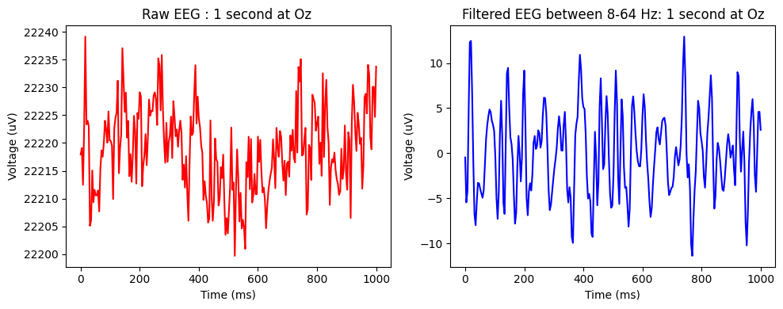

<!DOCTYPE html>
<html lang="en">

<head>

  <meta charset="utf-8">
  <meta name="viewport" content="width=device-width, initial-scale=1">
  <meta name="description" content="Keras documentation: Electroencephalogram Signal Classification for Brain-Computer Interface">
  <meta name="author" content="Keras Team">
  <link rel="shortcut icon" href="../../img/favicon.ico">
  
  <link rel="canonical" href="eeg_bci_ssvepformer.html" />
  

  <!-- Social -->
  <meta property="og:title" content="Keras documentation: Electroencephalogram Signal Classification for Brain-Computer Interface">
  <meta property="og:image" content="https://keras.io/img/logo-k-keras-wb.png">
  <meta name="twitter:title" content="Keras documentation: Electroencephalogram Signal Classification for Brain-Computer Interface">
  <meta name="twitter:image" content="https://keras.io/img/k-keras-social.png">
  <meta name="twitter:card" content="summary">

  <title>Electroencephalogram Signal Classification for Brain-Computer Interface</title>

  <!-- Custom fonts for this template -->
  <link href="https://fonts.googleapis.com/css2?family=Open+Sans:wght@400;600;700;800&display=swap" rel="stylesheet">
  <link href="https://fonts.googleapis.com/css2?family=Montserrat:wght@300;400;600;700;800&display=swap" rel="stylesheet">
  <link href="https://fonts.googleapis.com/css2?family=Roboto+Mono:wght@400&display=swap" rel="stylesheet">

  <!-- Bootstrap core CSS -->
  <link href="../../css/bootstrap.min.css" rel="stylesheet">

  <!-- Custom styles for this template -->
  <link href="../../css/docs.css@v=3.css" rel="stylesheet">
  <link href="../../css/monokai.css" rel="stylesheet">
  <link rel="stylesheet" href="https://cdn.jsdelivr.net/npm/katex@0.16.9/dist/katex.min.css"
    integrity="sha384-n8MVd4RsNIU0tAv4ct0nTaAbDJwPJzDEaqSD1odI+WdtXRGWt2kTvGFasHpSy3SV" crossorigin="anonymous">

  <script defer src="https://cdn.jsdelivr.net/npm/katex@0.16.9/dist/katex.min.js"
    integrity="sha384-XjKyOOlGwcjNTAIQHIpgOno0Hl1YQqzUOEleOLALmuqehneUG+vnGctmUb0ZY0l8" crossorigin="anonymous">
  </script>

  <script defer src="https://cdn.jsdelivr.net/npm/katex@0.16.9/dist/contrib/auto-render.min.js"
    integrity="sha384-+VBxd3r6XgURycqtZ117nYw44OOcIax56Z4dCRWbxyPt0Koah1uHoK0o4+/RRE05" crossorigin="anonymous" 
    onload='renderMathInElement(document.body, {
      delimiters: [
        {left: "\\(", right: "\\)", display: false},
        {left: "\\[", right: "\\]", display: true},
        {left: "$$", right: "$$", display: true},
        {left: "$", right: "$", display: false}
      ],
      throwOnError: false
    });'>
  </script>

  <!-- Google Tag Manager -->
  <script>(function(w,d,s,l,i){w[l]=w[l]||[];w[l].push({'gtm.start':
  new Date().getTime(),event:'gtm.js'});var f=d.getElementsByTagName(s)[0],
  j=d.createElement(s),dl=l!='dataLayer'?'&l='+l:'';j.async=true;j.src=
  'https://www.googletagmanager.com/gtm.js?id='+i+dl;f.parentNode.insertBefore(j,f);
  })(window,document,'script','dataLayer','GTM-5DNGF4N');
  </script>
  <script>
  (function(i,s,o,g,r,a,m){i['GoogleAnalyticsObject']=r;i[r]=i[r]||function(){
  (i[r].q=i[r].q||[]).push(arguments)},i[r].l=1*new Date();a=s.createElement(o),
  m=s.getElementsByTagName(o)[0];a.async=1;a.src=g;m.parentNode.insertBefore(a,m)
  })(window,document,'script','https://www.google-analytics.com/analytics.js','ga');
  ga('create', 'UA-175165319-128', 'auto');
  ga('send', 'pageview');
  </script>
  <!-- End Google Tag Manager -->

  <script async defer src="https://buttons.github.io/buttons.js"></script>
  <link rel="preconnect" href="https://fonts.googleapis.com">
  <link rel="preconnect" href="https://fonts.gstatic.com" crossorigin>

</head>

<body>
  <!-- Google Tag Manager (noscript) -->
  <noscript><iframe src="https://www.googletagmanager.com/ns.html?id=GTM-5DNGF4N"
  height="0" width="0" style="display:none;visibility:hidden"></iframe></noscript>
  <!-- End Google Tag Manager (noscript) -->

  <div class="k-page">
    <div class="hidden">
      
      
      
        
      
        
      
        
          None
      
      
        
      
        
      
        
      
        
      
        
      
    </div>
    <nav class="nav__container">
      <div class="nav__wrapper">
        <div class="nav__controls--mobile">
          <button class="nav__menu--button"><i class="icon--menu"></i></button>
          <button class="nav__menu--close"><i class="icon--close"></i></button>
          <a href="https://keras.io/">
            
          </a>
          <button class="nav__search--mobile">
            <i class="icon__search--mobile"></i>
          </button>
        </div>
        <form class="nav__search nav__search-form--mobile">
          <input
            class="nav__search--input"
            type="search"
            placeholder="SEARCH"
            aria-label="Search"
          />
          <button class="nav__search--button" type="submit">
            <i class="icon--search"></i>
          </button>
        </form>
        <div class="k-nav nav__mobile-menu" id="nav-menu">
          <!-- version with just the active item visible -->
          <div class="nav flex-column nav-pills" role="tablist" aria-orientation="vertical">
            
              <a class="nav-link" href="https://keras.io/getting_started/" role="tab" aria-selected="">Getting started</a>
              
            
              <a class="nav-link" href="https://keras.io/guides/" role="tab" aria-selected="">Developer guides</a>
              
            
              <a class="nav-link active" href="../index.html" role="tab" aria-selected="">Code examples</a>
              
                
                  <a class="nav-sublink" href="../vision.html">Computer Vision</a>
                    
                
                  <a class="nav-sublink" href="../nlp/index.html">Natural Language Processing</a>
                    
                
                  <a class="nav-sublink" href="../structured_data/index.html">Structured Data</a>
                    
                
                  <a class="nav-sublink active" href="index.html">Timeseries</a>
                    
                      
                        <a class="nav-sublink2" href="timeseries_classification_from_scratch.html">Timeseries classification from scratch</a>
                      
                        <a class="nav-sublink2" href="timeseries_classification_transformer.html">Timeseries classification with a Transformer model</a>
                      
                        <a class="nav-sublink2" href="eeg_signal_classification.html">Electroencephalogram Signal Classification for action identification</a>
                      
                        <a class="nav-sublink2" href="event_classification_for_payment_card_fraud_detection.html">Event classification for payment card fraud detection</a>
                      
                        <a class="nav-sublink2 active" href="eeg_bci_ssvepformer.html">Electroencephalogram Signal Classification for Brain-Computer Interface</a>
                      
                        <a class="nav-sublink2" href="timeseries_anomaly_detection.html">Timeseries anomaly detection using an Autoencoder</a>
                      
                        <a class="nav-sublink2" href="timeseries_traffic_forecasting.html">Traffic forecasting using graph neural networks and LSTM</a>
                      
                        <a class="nav-sublink2" href="timeseries_weather_forecasting.html">Timeseries forecasting for weather prediction</a>
                      
                    
                
                  <a class="nav-sublink" href="../generative/index.html">Generative Deep Learning</a>
                    
                
                  <a class="nav-sublink" href="../audio/index.html">Audio Data</a>
                    
                
                  <a class="nav-sublink" href="../rl/index.html">Reinforcement Learning</a>
                    
                
                  <a class="nav-sublink" href="../graph/index.html">Graph Data</a>
                    
                
                  <a class="nav-sublink" href="../keras_recipes/index.html">Quick Keras Recipes</a>
                    
                
              
            
              <a class="nav-link" href="https://keras.io/api/" role="tab" aria-selected="">Keras 3 API documentation</a>
              
            
              <a class="nav-link" href="https://keras.io/2/api/" role="tab" aria-selected="">Keras 2 API documentation</a>
              
            
              <a class="nav-link" href="https://keras.io/keras_tuner/" role="tab" aria-selected="">KerasTuner: Hyperparam Tuning</a>
              
            
              <a class="nav-link" href="https://keras.io/keras_hub/" role="tab" aria-selected="">KerasHub: Pretrained Models</a>
              
            
              <a class="nav-link" href="https://keras.io/keras_rs/" role="tab" aria-selected="">KerasRS</a>
              
            
          </div>
        </div>

        <a href="https://keras.io/">
          
        </a>
        <div class="nav__menu">
          
          <ul class="nav__item--container">
            
            <li class="nav__item">
              <a class="nav__link" href="https://keras.io/getting_started/">Get started</a>
            </li>
            
            <li class="nav__item">
              <a class="nav__link" href="https://keras.io/guides/">Guides</a>
            </li>
            
            <li class="nav__item">
              <a class="nav__link" href="https://keras.io/api/">API</a>
            </li>
            
            <li class="nav__item">
              <a class="nav__link nav__link--active" href="../index.html">Examples</a>
            </li>
            
            <li class="nav__item">
              <a class="nav__link" href="https://keras.io/keras_hub/">Keras Hub</a>
            </li>
            
            <li class="nav__item">
              <a class="nav__link" href="https://keras.io/keras_rs/">Keras RS</a>
            </li>
            
            <li class="nav__item">
              <a class="nav__link" href="https://keras.io/keras_tuner/">Keras Tuner</a>
            </li>
            
          </ul>

          <form class="nav__search">
            <input
              class="nav__search--input"
              type="search"
              placeholder="SEARCH"
              aria-label="Search"
            />
            <button class="nav__search--button" type="submit">
              <i class="icon--search"></i>
            </button>
          </form>
        </div>
      </div>
    </nav>

    <div class="page__container flex__container">
      <div class="nav__side-nav" id="nav-menu">
        <div class="nav flex-column nav-pills" role="tablist" aria-orientation="vertical">
          
            
          
            
          
            
            <a class="nav-link active" href="../index.html" role="tab" aria-selected="">
              Code examples
            </a>
              
                <div class="nav-expanded-panel">
                  
                    <a class="nav-sublink" href="../vision.html">Computer Vision</a>
                    
                  
                    <a class="nav-sublink" href="../nlp/index.html">Natural Language Processing</a>
                    
                  
                    <a class="nav-sublink" href="../structured_data/index.html">Structured Data</a>
                    
                  
                    <a class="nav-sublink active" href="index.html">Timeseries</a>
                    
                      
                        <a class="nav-sublink2" href="timeseries_classification_from_scratch.html">Timeseries classification from scratch</a>
                      
                        <a class="nav-sublink2" href="timeseries_classification_transformer.html">Timeseries classification with a Transformer model</a>
                      
                        <a class="nav-sublink2" href="eeg_signal_classification.html">Electroencephalogram Signal Classification for action identification</a>
                      
                        <a class="nav-sublink2" href="event_classification_for_payment_card_fraud_detection.html">Event classification for payment card fraud detection</a>
                      
                        <a class="nav-sublink2 active" href="eeg_bci_ssvepformer.html">Electroencephalogram Signal Classification for Brain-Computer Interface</a>
                      
                        <a class="nav-sublink2" href="timeseries_anomaly_detection.html">Timeseries anomaly detection using an Autoencoder</a>
                      
                        <a class="nav-sublink2" href="timeseries_traffic_forecasting.html">Traffic forecasting using graph neural networks and LSTM</a>
                      
                        <a class="nav-sublink2" href="timeseries_weather_forecasting.html">Timeseries forecasting for weather prediction</a>
                      
                    
                  
                    <a class="nav-sublink" href="../generative/index.html">Generative Deep Learning</a>
                    
                  
                    <a class="nav-sublink" href="../audio/index.html">Audio Data</a>
                    
                  
                    <a class="nav-sublink" href="../rl/index.html">Reinforcement Learning</a>
                    
                  
                    <a class="nav-sublink" href="../graph/index.html">Graph Data</a>
                    
                  
                    <a class="nav-sublink" href="../keras_recipes/index.html">Quick Keras Recipes</a>
                    
                  
                </div>
              
            
          
            
          
            
          
            
          
            
          
            
          
        </div>
      </div>
      <div class="k-main">
        <div class='k-main-inner' id='k-main-id'>
  <div class='k-content'>
    <div class='k-location-slug'>
      <span class="k-location-slug-pointer">►</span> 
          <a href='../index.html'>Code examples</a> /
        
          <a href='index.html'>Timeseries</a> /
         Electroencephalogram Signal Classification for Brain-Computer Interface
    </div>
    <h1 id="electroencephalogram-signal-classification-for-braincomputer-interface">Electroencephalogram Signal Classification for Brain-Computer Interface</h1>
<p><strong>Author:</strong> <a href="https://github.com/okbalefthanded">Okba Bekhelifi</a><br>
<strong>Date created:</strong> 2025/01/08<br>
<strong>Last modified:</strong> 2025/01/08<br>
<strong>Description:</strong> A Transformer based classification for EEG signal for BCI.</p>
<div class='example_version_banner keras_3'>ⓘ This example uses Keras 3</div>
<p> <a href="https://colab.research.google.com/github/keras-team/keras-io/blob/master/examples/timeseries/ipynb/eeg_bci_ssvepformer.ipynb"><strong>View in Colab</strong></a>  <span class="k-dot">•</span> <a href="https://github.com/keras-team/keras-io/blob/master/examples/timeseries/eeg_bci_ssvepformer.py"><strong>GitHub source</strong></a></p>
<h1 id="introduction">Introduction</h1>
<p>This tutorial will explain how to build a Transformer based Neural Network to classify
Brain-Computer Interface (BCI) Electroencephalograpy (EEG) data recorded in a
Steady-State Visual Evoked Potentials (SSVEPs) experiment for the application of a
brain-controlled speller.</p>
<p>The tutorial reproduces an experiment from the SSVEPFormer study [1]
( <a href="https://arxiv.org/abs/2210.04172">arXiv preprint</a> /
<a href="https://www.sciencedirect.com/science/article/abs/pii/S0893608023002319">Peer-Reviewed paper</a> ).
This model was the first Transformer based model to be introduced for SSVEP data classification,
we will test it on the Nakanishi et al. [2] public dataset as dataset 1 from the paper.</p>
<p>The process follows an inter-subject classification experiment. Given N subject data in
the dataset, the training data partition contains data from N-1 subject and the remaining
single subject data is used for testing. the training set does not contain any sample from
the testing subject. This way we construct a true subject-independent model. We keep the
same parameters and settings as the original paper in all processing operations from
preprocessing to training.</p>
<p>The tutorial begins with a quick BCI and dataset description then, we go through the
technicalities following these sections:
- Setup, and imports.
- Dataset download and extraction.
- Data preprocessing: EEG data filtering, segmentation and visualization of raw and
filtered data, and frequency response for a well performing participant.
- Layers and model creation.
- Evaluation: a single participant data classification as an example then the total
participants data classification.
- Visulization: we show the results of training and inference times comparison among
the Keras 3 available backends (JAX, Tensorflow, and PyTorch) on three different GPUs.
- Conclusion: final discussion and remarks.</p>
<h1 id="dataset-description">Dataset description</h1>
<hr />
<h2 id="bci-and-ssvep">BCI and SSVEP:</h2>
<p>A BCI offers the ability to communicate using only brain activity, this can be achieved
through exogenous stimuli that generate specific responses indicating the intent of the
subject. the responses are elicited when the user focuses their attention on the target
stimulus. We can use visual stimuli by presenting the subject with a set of options
typically on a monitor as a grid to select one command at a time. Each stimulus will
flicker following a fixed frequency and phase, the resulting EEG recorded at occipital
and occipito-parietal areas of the cortex (visual cortex) will have higher power in the
associated frequency with the stimulus where the subject was looking at. This type of
BCI paradigm is called the Steady-State Visual Evoked Potentials (SSVEPs) and became
widely used for multiple application due to its reliability and high perfromance in
classification and rapidity as a 1-second of EEG is sufficient making a command. Other
types of brain responses exists and do not require external stimulations, however they
are less reliable.
<a href="https://www.youtube.com/watch?v=VtA6jsEMIug">Demo video</a></p>
<p>This tutorials uses the 12 commands (class) public SSVEP dataset [2] with the following
interface emulating a phone dialing numbers.
</p>
<p>The dataset was recorded with 10 participants, each faced the above 12 SSVEP stimuli (A).
The stimulation frequencies ranged from 9.25Hz to 14.75 Hz with 0.5Hz step, and phases
ranged from 0 to 1.5 π with 0.5 π step for each row.(B). The EEG signal was acquired
with 8 electrodes (channels) (PO7, PO3, POz,
PO4, PO8, O1, Oz, O2) sampling frequency was 2048 Hz then the stored data were
downsampled to 256 Hz. The subjects completed 15 blocks of recordings, each consisted
of 12 random ordered stimulations (1 for each class) of 4 seconds each. In total,
each subject conducted 180 trials.</p>
<h1 id="setup">Setup</h1>
<hr />
<h2 id="select-jax-backend">Select JAX backend</h2>
<div class="codehilite"><pre><span></span><code><span class="kn">import</span><span class="w"> </span><span class="nn">os</span>

<span class="n">os</span><span class="o">.</span><span class="n">environ</span><span class="p">[</span><span class="s2">&quot;KERAS_BACKEND&quot;</span><span class="p">]</span> <span class="o">=</span> <span class="s2">&quot;jax&quot;</span>
</code></pre></div>

<hr />
<h2 id="install-dependencies">Install dependencies</h2>
<div class="codehilite"><pre><span></span><code><span class="err">!</span><span class="n">pip</span> <span class="n">install</span> <span class="o">-</span><span class="n">q</span> <span class="n">numpy</span>
<span class="err">!</span><span class="n">pip</span> <span class="n">install</span> <span class="o">-</span><span class="n">q</span> <span class="n">scipy</span>
<span class="err">!</span><span class="n">pip</span> <span class="n">install</span> <span class="o">-</span><span class="n">q</span> <span class="n">matplotlib</span>
</code></pre></div>

<h1 id="imports">Imports</h1>
<div class="codehilite"><pre><span></span><code><span class="c1"># deep learning libraries</span>
<span class="kn">from</span><span class="w"> </span><span class="nn">keras</span><span class="w"> </span><span class="kn">import</span> <span class="n">backend</span> <span class="k">as</span> <span class="n">K</span>
<span class="kn">from</span><span class="w"> </span><span class="nn">keras</span><span class="w"> </span><span class="kn">import</span> <span class="n">layers</span>
<span class="kn">import</span><span class="w"> </span><span class="nn">keras</span>

<span class="c1"># visualization and signal processing imports</span>
<span class="kn">import</span><span class="w"> </span><span class="nn">matplotlib.pyplot</span><span class="w"> </span><span class="k">as</span><span class="w"> </span><span class="nn">plt</span>
<span class="kn">import</span><span class="w"> </span><span class="nn">tensorflow</span><span class="w"> </span><span class="k">as</span><span class="w"> </span><span class="nn">tf</span>
<span class="kn">import</span><span class="w"> </span><span class="nn">numpy</span><span class="w"> </span><span class="k">as</span><span class="w"> </span><span class="nn">np</span>
<span class="kn">from</span><span class="w"> </span><span class="nn">scipy.signal</span><span class="w"> </span><span class="kn">import</span> <span class="n">butter</span><span class="p">,</span> <span class="n">filtfilt</span>
<span class="kn">from</span><span class="w"> </span><span class="nn">scipy.io</span><span class="w"> </span><span class="kn">import</span> <span class="n">loadmat</span>

<span class="c1"># setting the backend, seed and Keras channel format</span>
<span class="n">K</span><span class="o">.</span><span class="n">set_image_data_format</span><span class="p">(</span><span class="s2">&quot;channels_first&quot;</span><span class="p">)</span>
<span class="n">keras</span><span class="o">.</span><span class="n">utils</span><span class="o">.</span><span class="n">set_random_seed</span><span class="p">(</span><span class="mi">42</span><span class="p">)</span>
</code></pre></div>

<h1 id="download-and-extract-dataset">Download and extract dataset</h1>
<hr />
<h2 id="dataset-repo">Nakanishi et. al 2015 <a href="https://github.com/mnakanishi/12JFPM_SSVEP">DataSet Repo</a></h2>
<div class="codehilite"><pre><span></span><code><span class="err">!</span><span class="n">curl</span> <span class="o">-</span><span class="n">O</span> <span class="n">https</span><span class="p">:</span><span class="o">//</span><span class="n">sccn</span><span class="o">.</span><span class="n">ucsd</span><span class="o">.</span><span class="n">edu</span><span class="o">/</span><span class="n">download</span><span class="o">/</span><span class="n">cca_ssvep</span><span class="o">.</span><span class="n">zip</span>
<span class="err">!</span><span class="n">unzip</span> <span class="n">cca_ssvep</span><span class="o">.</span><span class="n">zip</span>
</code></pre></div>

<div class="k-default-codeblock">

<div class="codehilite"><pre><span></span><code>  % Total    % Received % Xferd  Average Speed   Time    Time     Time  Current
                                 Dload  Upload   Total   Spent    Left  Speed
</code></pre></div>


</div>

<p>0     0    0     0    0     0      0      0 &ndash;:&ndash;:&ndash; &ndash;:&ndash;:&ndash; &ndash;:&ndash;:&ndash;     0
  0     0    0     0    0     0      0      0 &ndash;:&ndash;:&ndash; &ndash;:&ndash;:&ndash; &ndash;:&ndash;:&ndash;     0</p>
<p>0  145M    0 49152    0     0  40897      0  1:02:11  0:00:01  1:02:10 40891</p>
<p>1  145M    1 2480k    0     0  1140k      0  0:02:10  0:00:02  0:02:08 1140k</p>
<p>9  145M    9 13.4M    0     0  4371k      0  0:00:34  0:00:03  0:00:31 4371k</p>
<p>17  145M   17 25.9M    0     0  6201k      0  0:00:24  0:00:04  0:00:20 6200k</p>
<p>25  145M   25 37.2M    0     0  7398k      0  0:00:20  0:00:05  0:00:15 7632k</p>
<p>33  145M   33 48.9M    0     0  8052k      0  0:00:18  0:00:06  0:00:12 9972k</p>
<p>41  145M   41 60.3M    0     0  8586k      0  0:00:17  0:00:07  0:00:10 11.5M</p>
<p>49  145M   49 71.9M    0     0  9014k      0  0:00:16  0:00:08  0:00:08 11.6M</p>
<p>57  145M   57 84.2M    0     0  9423k      0  0:00:15  0:00:09  0:00:06 11.9M</p>
<p>66  145M   66 96.5M    0     0  9709k      0  0:00:15  0:00:10  0:00:05 11.8M</p>
<p>74  145M   74  108M    0     0  9938k      0  0:00:14  0:00:11  0:00:03 12.0M</p>
<p>82  145M   82  119M    0     0   9.8M      0  0:00:14  0:00:12  0:00:02 11.8M</p>
<p>90  145M   90  131M    0     0   9.9M      0  0:00:14  0:00:13  0:00:01 11.8M</p>
<p>98  145M   98  142M    0     0  10.0M      0  0:00:14  0:00:14 &ndash;:&ndash;:&ndash; 11.7M
100  145M  100  145M    0     0  10.1M      0  0:00:14  0:00:14 &ndash;:&ndash;:&ndash; 11.7M</p>
<div class="k-default-codeblock">

<div class="codehilite"><pre><span></span><code>Archive:  cca_ssvep.zip
   creating: cca_ssvep/
  inflating: cca_ssvep/s4.mat        
  inflating: cca_ssvep/s5.mat        
</code></pre></div>


</div>

<div class="k-default-codeblock">

<div class="codehilite"><pre><span></span><code>  inflating: cca_ssvep/s3.mat        
  inflating: cca_ssvep/s7.mat        
</code></pre></div>


</div>

<div class="k-default-codeblock">

<div class="codehilite"><pre><span></span><code>  inflating: cca_ssvep/chan_locs.pdf  
  inflating: cca_ssvep/readme.txt    
  inflating: cca_ssvep/s2.mat        
  inflating: cca_ssvep/s8.mat        
</code></pre></div>


</div>

<div class="k-default-codeblock">

<div class="codehilite"><pre><span></span><code>  inflating: cca_ssvep/s10.mat       
</code></pre></div>


</div>

<div class="k-default-codeblock">

<div class="codehilite"><pre><span></span><code>  inflating: cca_ssvep/s9.mat        
</code></pre></div>


</div>

<div class="k-default-codeblock">

<div class="codehilite"><pre><span></span><code>  inflating: cca_ssvep/s6.mat        
  inflating: cca_ssvep/s1.mat        
</code></pre></div>


</div>

<h1 id="preprocessing">Pre-Processing</h1>
<p>The preprocessing steps followed are first to read the EEG data for each subject, then
to filter the raw data in a frequency interval where most useful information lies,
then we select a fixed duration of signal starting from the onset of the stimulation
(due to latency delay caused by the visual system we start we add 135 milliseconds to
the stimulation onset). Lastly, all subjects data are concatenated in a single Tensor
of the shape: [subjects x samples x channels x trials]. The data labels are also
concatenated following the order of the trials in the experiments and will be a
matrix of the shape [subjects x trials]
(here by channels we mean electrodes, we use this notation throughout the tutorial).</p>
<div class="codehilite"><pre><span></span><code><span class="k">def</span><span class="w"> </span><span class="nf">raw_signal</span><span class="p">(</span><span class="n">folder</span><span class="p">,</span> <span class="n">fs</span><span class="o">=</span><span class="mi">256</span><span class="p">,</span> <span class="n">duration</span><span class="o">=</span><span class="mf">1.0</span><span class="p">,</span> <span class="n">onset</span><span class="o">=</span><span class="mf">0.135</span><span class="p">):</span>
<span class="w">    </span><span class="sd">&quot;&quot;&quot;selecting a 1-second segment of the raw EEG signal for</span>
<span class="sd">    subject 1.</span>
<span class="sd">    &quot;&quot;&quot;</span>
    <span class="n">onset</span> <span class="o">=</span> <span class="mi">38</span> <span class="o">+</span> <span class="nb">int</span><span class="p">(</span><span class="n">onset</span> <span class="o">*</span> <span class="n">fs</span><span class="p">)</span>
    <span class="n">end</span> <span class="o">=</span> <span class="nb">int</span><span class="p">(</span><span class="n">duration</span> <span class="o">*</span> <span class="n">fs</span><span class="p">)</span>
    <span class="n">data</span> <span class="o">=</span> <span class="n">loadmat</span><span class="p">(</span><span class="sa">f</span><span class="s2">&quot;</span><span class="si">{</span><span class="n">folder</span><span class="si">}</span><span class="s2">/s1.mat&quot;</span><span class="p">)</span>
    <span class="c1"># samples, channels, trials, targets</span>
    <span class="n">eeg</span> <span class="o">=</span> <span class="n">data</span><span class="p">[</span><span class="s2">&quot;eeg&quot;</span><span class="p">]</span><span class="o">.</span><span class="n">transpose</span><span class="p">((</span><span class="mi">2</span><span class="p">,</span> <span class="mi">1</span><span class="p">,</span> <span class="mi">3</span><span class="p">,</span> <span class="mi">0</span><span class="p">))</span>
    <span class="c1"># segment data</span>
    <span class="n">eeg</span> <span class="o">=</span> <span class="n">eeg</span><span class="p">[</span><span class="n">onset</span> <span class="p">:</span> <span class="n">onset</span> <span class="o">+</span> <span class="n">end</span><span class="p">,</span> <span class="p">:,</span> <span class="p">:,</span> <span class="p">:]</span>
    <span class="k">return</span> <span class="n">eeg</span>


<span class="k">def</span><span class="w"> </span><span class="nf">segment_eeg</span><span class="p">(</span>
    <span class="n">folder</span><span class="p">,</span> <span class="n">elecs</span><span class="o">=</span><span class="kc">None</span><span class="p">,</span> <span class="n">fs</span><span class="o">=</span><span class="mi">256</span><span class="p">,</span> <span class="n">duration</span><span class="o">=</span><span class="mf">1.0</span><span class="p">,</span> <span class="n">band</span><span class="o">=</span><span class="p">[</span><span class="mf">5.0</span><span class="p">,</span> <span class="mf">45.0</span><span class="p">],</span> <span class="n">order</span><span class="o">=</span><span class="mi">4</span><span class="p">,</span> <span class="n">onset</span><span class="o">=</span><span class="mf">0.135</span>
<span class="p">):</span>
<span class="w">    </span><span class="sd">&quot;&quot;&quot;Filtering and segmenting EEG signals for all subjects.&quot;&quot;&quot;</span>
    <span class="n">n_subejects</span> <span class="o">=</span> <span class="mi">10</span>
    <span class="n">onset</span> <span class="o">=</span> <span class="mi">38</span> <span class="o">+</span> <span class="nb">int</span><span class="p">(</span><span class="n">onset</span> <span class="o">*</span> <span class="n">fs</span><span class="p">)</span>
    <span class="n">end</span> <span class="o">=</span> <span class="nb">int</span><span class="p">(</span><span class="n">duration</span> <span class="o">*</span> <span class="n">fs</span><span class="p">)</span>
    <span class="n">X</span><span class="p">,</span> <span class="n">Y</span> <span class="o">=</span> <span class="p">[],</span> <span class="p">[]</span>  <span class="c1"># empty data and labels</span>

    <span class="k">for</span> <span class="n">subj</span> <span class="ow">in</span> <span class="nb">range</span><span class="p">(</span><span class="mi">1</span><span class="p">,</span> <span class="n">n_subejects</span> <span class="o">+</span> <span class="mi">1</span><span class="p">):</span>
        <span class="n">data</span> <span class="o">=</span> <span class="n">loadmat</span><span class="p">(</span><span class="sa">f</span><span class="s2">&quot;</span><span class="si">{</span><span class="n">data_folder</span><span class="si">}</span><span class="s2">/s</span><span class="si">{</span><span class="n">subj</span><span class="si">}</span><span class="s2">.mat&quot;</span><span class="p">)</span>
        <span class="c1"># samples, channels, trials, targets</span>
        <span class="n">eeg</span> <span class="o">=</span> <span class="n">data</span><span class="p">[</span><span class="s2">&quot;eeg&quot;</span><span class="p">]</span><span class="o">.</span><span class="n">transpose</span><span class="p">((</span><span class="mi">2</span><span class="p">,</span> <span class="mi">1</span><span class="p">,</span> <span class="mi">3</span><span class="p">,</span> <span class="mi">0</span><span class="p">))</span>
        <span class="c1"># filter data</span>
        <span class="n">eeg</span> <span class="o">=</span> <span class="n">filter_eeg</span><span class="p">(</span><span class="n">eeg</span><span class="p">,</span> <span class="n">fs</span><span class="o">=</span><span class="n">fs</span><span class="p">,</span> <span class="n">band</span><span class="o">=</span><span class="n">band</span><span class="p">,</span> <span class="n">order</span><span class="o">=</span><span class="n">order</span><span class="p">)</span>
        <span class="c1"># segment data</span>
        <span class="n">eeg</span> <span class="o">=</span> <span class="n">eeg</span><span class="p">[</span><span class="n">onset</span> <span class="p">:</span> <span class="n">onset</span> <span class="o">+</span> <span class="n">end</span><span class="p">,</span> <span class="p">:,</span> <span class="p">:,</span> <span class="p">:]</span>
        <span class="c1"># reshape labels</span>
        <span class="n">samples</span><span class="p">,</span> <span class="n">channels</span><span class="p">,</span> <span class="n">blocks</span><span class="p">,</span> <span class="n">targets</span> <span class="o">=</span> <span class="n">eeg</span><span class="o">.</span><span class="n">shape</span>
        <span class="n">y</span> <span class="o">=</span> <span class="n">np</span><span class="o">.</span><span class="n">tile</span><span class="p">(</span><span class="n">np</span><span class="o">.</span><span class="n">arange</span><span class="p">(</span><span class="mi">1</span><span class="p">,</span> <span class="n">targets</span> <span class="o">+</span> <span class="mi">1</span><span class="p">),</span> <span class="p">(</span><span class="n">blocks</span><span class="p">,</span> <span class="mi">1</span><span class="p">))</span>
        <span class="n">y</span> <span class="o">=</span> <span class="n">y</span><span class="o">.</span><span class="n">reshape</span><span class="p">((</span><span class="mi">1</span><span class="p">,</span> <span class="n">blocks</span> <span class="o">*</span> <span class="n">targets</span><span class="p">),</span> <span class="n">order</span><span class="o">=</span><span class="s2">&quot;F&quot;</span><span class="p">)</span>

        <span class="n">X</span><span class="o">.</span><span class="n">append</span><span class="p">(</span><span class="n">eeg</span><span class="o">.</span><span class="n">reshape</span><span class="p">((</span><span class="n">samples</span><span class="p">,</span> <span class="n">channels</span><span class="p">,</span> <span class="n">blocks</span> <span class="o">*</span> <span class="n">targets</span><span class="p">),</span> <span class="n">order</span><span class="o">=</span><span class="s2">&quot;F&quot;</span><span class="p">))</span>
        <span class="n">Y</span><span class="o">.</span><span class="n">append</span><span class="p">(</span><span class="n">y</span><span class="p">)</span>

    <span class="n">X</span> <span class="o">=</span> <span class="n">np</span><span class="o">.</span><span class="n">array</span><span class="p">(</span><span class="n">X</span><span class="p">,</span> <span class="n">dtype</span><span class="o">=</span><span class="n">np</span><span class="o">.</span><span class="n">float32</span><span class="p">,</span> <span class="n">order</span><span class="o">=</span><span class="s2">&quot;F&quot;</span><span class="p">)</span>
    <span class="n">Y</span> <span class="o">=</span> <span class="n">np</span><span class="o">.</span><span class="n">array</span><span class="p">(</span><span class="n">Y</span><span class="p">,</span> <span class="n">dtype</span><span class="o">=</span><span class="n">np</span><span class="o">.</span><span class="n">float32</span><span class="p">)</span><span class="o">.</span><span class="n">squeeze</span><span class="p">()</span>

    <span class="k">return</span> <span class="n">X</span><span class="p">,</span> <span class="n">Y</span>


<span class="k">def</span><span class="w"> </span><span class="nf">filter_eeg</span><span class="p">(</span><span class="n">data</span><span class="p">,</span> <span class="n">fs</span><span class="o">=</span><span class="mi">256</span><span class="p">,</span> <span class="n">band</span><span class="o">=</span><span class="p">[</span><span class="mf">5.0</span><span class="p">,</span> <span class="mf">45.0</span><span class="p">],</span> <span class="n">order</span><span class="o">=</span><span class="mi">4</span><span class="p">):</span>
<span class="w">    </span><span class="sd">&quot;&quot;&quot;Filter EEG signal using a zero-phase IIR filter&quot;&quot;&quot;</span>
    <span class="n">B</span><span class="p">,</span> <span class="n">A</span> <span class="o">=</span> <span class="n">butter</span><span class="p">(</span><span class="n">order</span><span class="p">,</span> <span class="n">np</span><span class="o">.</span><span class="n">array</span><span class="p">(</span><span class="n">band</span><span class="p">)</span> <span class="o">/</span> <span class="p">(</span><span class="n">fs</span> <span class="o">/</span> <span class="mi">2</span><span class="p">),</span> <span class="n">btype</span><span class="o">=</span><span class="s2">&quot;bandpass&quot;</span><span class="p">)</span>
    <span class="k">return</span> <span class="n">filtfilt</span><span class="p">(</span><span class="n">B</span><span class="p">,</span> <span class="n">A</span><span class="p">,</span> <span class="n">data</span><span class="p">,</span> <span class="n">axis</span><span class="o">=</span><span class="mi">0</span><span class="p">)</span>
</code></pre></div>

<hr />
<h2 id="segment-data-into-epochs">Segment data into epochs</h2>
<div class="codehilite"><pre><span></span><code><span class="n">data_folder</span> <span class="o">=</span> <span class="n">os</span><span class="o">.</span><span class="n">path</span><span class="o">.</span><span class="n">abspath</span><span class="p">(</span><span class="s2">&quot;./cca_ssvep&quot;</span><span class="p">)</span>
<span class="n">band</span> <span class="o">=</span> <span class="p">[</span><span class="mi">8</span><span class="p">,</span> <span class="mi">64</span><span class="p">]</span>  <span class="c1"># low-frequency / high-frequency cutoffS</span>
<span class="n">order</span> <span class="o">=</span> <span class="mi">4</span>  <span class="c1"># filter order</span>
<span class="n">fs</span> <span class="o">=</span> <span class="mi">256</span>  <span class="c1"># sampling frequency</span>
<span class="n">duration</span> <span class="o">=</span> <span class="mf">1.0</span>  <span class="c1"># 1 second</span>

<span class="c1"># raw signal</span>
<span class="n">X_raw</span> <span class="o">=</span> <span class="n">raw_signal</span><span class="p">(</span><span class="n">data_folder</span><span class="p">,</span> <span class="n">fs</span><span class="o">=</span><span class="n">fs</span><span class="p">,</span> <span class="n">duration</span><span class="o">=</span><span class="n">duration</span><span class="p">)</span>
<span class="nb">print</span><span class="p">(</span>
    <span class="sa">f</span><span class="s2">&quot;A single subject raw EEG (X_raw) shape: </span><span class="si">{</span><span class="n">X_raw</span><span class="o">.</span><span class="n">shape</span><span class="si">}</span><span class="s2"> [Samples x Channels x Blocks x Targets]&quot;</span>
<span class="p">)</span>

<span class="c1"># segmented signal</span>
<span class="n">X</span><span class="p">,</span> <span class="n">Y</span> <span class="o">=</span> <span class="n">segment_eeg</span><span class="p">(</span><span class="n">data_folder</span><span class="p">,</span> <span class="n">band</span><span class="o">=</span><span class="n">band</span><span class="p">,</span> <span class="n">order</span><span class="o">=</span><span class="n">order</span><span class="p">,</span> <span class="n">fs</span><span class="o">=</span><span class="n">fs</span><span class="p">,</span> <span class="n">duration</span><span class="o">=</span><span class="n">duration</span><span class="p">)</span>
<span class="nb">print</span><span class="p">(</span>
    <span class="sa">f</span><span class="s2">&quot;Full training data (X) shape: </span><span class="si">{</span><span class="n">X</span><span class="o">.</span><span class="n">shape</span><span class="si">}</span><span class="s2"> [Subject x Samples x Channels x Trials]&quot;</span>
<span class="p">)</span>
<span class="nb">print</span><span class="p">(</span><span class="sa">f</span><span class="s2">&quot;data labels (Y) shape:        </span><span class="si">{</span><span class="n">Y</span><span class="o">.</span><span class="n">shape</span><span class="si">}</span><span class="s2"> [Subject x Trials]&quot;</span><span class="p">)</span>

<span class="n">samples</span> <span class="o">=</span> <span class="n">X</span><span class="o">.</span><span class="n">shape</span><span class="p">[</span><span class="mi">1</span><span class="p">]</span>
<span class="n">time</span> <span class="o">=</span> <span class="n">np</span><span class="o">.</span><span class="n">linspace</span><span class="p">(</span><span class="mf">0.0</span><span class="p">,</span> <span class="n">samples</span> <span class="o">/</span> <span class="n">fs</span><span class="p">,</span> <span class="n">samples</span><span class="p">)</span> <span class="o">*</span> <span class="mi">1000</span>
</code></pre></div>

<div class="k-default-codeblock">

<div class="codehilite"><pre><span></span><code>A single subject raw EEG (X_raw) shape: (256, 8, 15, 12) [Samples x Channels x Blocks x Targets]

Full training data (X) shape: (10, 256, 8, 180) [Subject x Samples x Channels x Trials]
data labels (Y) shape:        (10, 180) [Subject x Trials]
</code></pre></div>


</div>
<hr />
<h2 id="visualize-eeg-signal">Visualize EEG signal</h2>
<hr />
<h2 id="eeg-in-time">EEG in time</h2>
<p>Raw EEG vs Filtered EEG
The same 1-second recording for subject s1 at Oz (central electrode in the visual cortex,
back of the head) is illustrated. left is the raw EEG as recorded and in the right is
the filtered EEG on the [8, 64] Hz frequency band. we see less noise and
normalized amplitude values in a natural EEG range.</p>
<div class="codehilite"><pre><span></span><code><span class="n">elec</span> <span class="o">=</span> <span class="mi">6</span>  <span class="c1"># Oz channel</span>

<span class="n">x_label</span> <span class="o">=</span> <span class="s2">&quot;Time (ms)&quot;</span>
<span class="n">y_label</span> <span class="o">=</span> <span class="s2">&quot;Voltage (uV)&quot;</span>
<span class="c1"># Create subplots</span>
<span class="n">fig</span><span class="p">,</span> <span class="p">(</span><span class="n">ax1</span><span class="p">,</span> <span class="n">ax2</span><span class="p">)</span> <span class="o">=</span> <span class="n">plt</span><span class="o">.</span><span class="n">subplots</span><span class="p">(</span><span class="mi">1</span><span class="p">,</span> <span class="mi">2</span><span class="p">,</span> <span class="n">figsize</span><span class="o">=</span><span class="p">(</span><span class="mi">10</span><span class="p">,</span> <span class="mi">4</span><span class="p">))</span>

<span class="c1"># Plot data on the first subplot</span>
<span class="n">ax1</span><span class="o">.</span><span class="n">plot</span><span class="p">(</span><span class="n">time</span><span class="p">,</span> <span class="n">X_raw</span><span class="p">[:,</span> <span class="n">elec</span><span class="p">,</span> <span class="mi">0</span><span class="p">,</span> <span class="mi">0</span><span class="p">],</span> <span class="s2">&quot;r-&quot;</span><span class="p">)</span>
<span class="n">ax1</span><span class="o">.</span><span class="n">set_xlabel</span><span class="p">(</span><span class="n">x_label</span><span class="p">)</span>
<span class="n">ax1</span><span class="o">.</span><span class="n">set_ylabel</span><span class="p">(</span><span class="n">y_label</span><span class="p">)</span>
<span class="n">ax1</span><span class="o">.</span><span class="n">set_title</span><span class="p">(</span><span class="s2">&quot;Raw EEG : 1 second at Oz &quot;</span><span class="p">)</span>

<span class="c1"># Plot data on the second subplot</span>
<span class="n">ax2</span><span class="o">.</span><span class="n">plot</span><span class="p">(</span><span class="n">time</span><span class="p">,</span> <span class="n">X</span><span class="p">[</span><span class="mi">0</span><span class="p">,</span> <span class="p">:,</span> <span class="n">elec</span><span class="p">,</span> <span class="mi">0</span><span class="p">],</span> <span class="s2">&quot;b-&quot;</span><span class="p">)</span>
<span class="n">ax2</span><span class="o">.</span><span class="n">set_xlabel</span><span class="p">(</span><span class="n">x_label</span><span class="p">)</span>
<span class="n">ax2</span><span class="o">.</span><span class="n">set_ylabel</span><span class="p">(</span><span class="n">y_label</span><span class="p">)</span>
<span class="n">ax2</span><span class="o">.</span><span class="n">set_title</span><span class="p">(</span><span class="s2">&quot;Filtered EEG between 8-64 Hz: 1 second at Oz&quot;</span><span class="p">)</span>

<span class="c1"># Adjust spacing between subplots</span>
<span class="n">plt</span><span class="o">.</span><span class="n">tight_layout</span><span class="p">()</span>

<span class="c1"># Show the plot</span>
<span class="n">plt</span><span class="o">.</span><span class="n">show</span><span class="p">()</span>
</code></pre></div>

<p></p>
<hr />
<h2 id="eeg-frequency-representation">EEG frequency representation</h2>
<p>Using the welch method, we visualize the frequency power for a well performing subject
for the entire 4 seconds EEG recording at Oz electrode for each stimuli. the red peaks
indicate the stimuli fundamental frequency and the 2nd harmonics (double the fundamental
frequency). we see clear peaks showing the high responses from that subject which means
that this subject is a good candidate for SSVEP BCI control. In many cases the peaks
are weak or absent, meaning that subject do not achieve the task correctly.</p>
<p></p>
<h1 id="create-layers-and-model">Create Layers and model</h1>
<p>Create Layers in a cross-framework custom component fashion.
In the SSVEPFormer, the data is first transformed to the frequency domain through
Fast-Fourier transform (FFT), to construct a complex spectrum presentation consisting of
the concatenation of frequency and phase information in a fixed frequency band. To keep
the model in an end-to-end format, we implement the complex spectrum transformation as
non-trainable layer.</p>
<p>
The SSVEPFormer unlike the Transformer architecture does not contain positional encoding/embedding
layers which replaced a channel combination block that has a layer of Conv1D layer of 1
kernel size with double input channels (double the count of electrodes) number of filters,
and LayerNorm, Gelu activation and dropout.
Another difference with Transformers is the absence of multi-head attention layers with
attention mechanism.
The model encoder contains two identical and successive blocks. Each block has two
sub-blocks of CNN module and MLP module. the CNN module consists of a LayerNorm, Conv1D
with the same number of filters as channel combination, LayerNorm, Gelu, Dropout and an
residual connection. The MLP module consists of a LayerNorm, Dense layer, Gelu, droput
and residual connection. the Dense layer is applied on each channel separately.
The last block of the model is MLP head with Flatten layer, Dropout, Dense, LayerNorm,
Gelu, Dropout and Dense layer with softmax acitvation.
All trainable weights are initialized by a normal distribution with 0 mean and 0.01
standard deviation as state in the original paper.</p>
<div class="codehilite"><pre><span></span><code><span class="k">class</span><span class="w"> </span><span class="nc">ComplexSpectrum</span><span class="p">(</span><span class="n">keras</span><span class="o">.</span><span class="n">layers</span><span class="o">.</span><span class="n">Layer</span><span class="p">):</span>
    <span class="k">def</span><span class="w"> </span><span class="fm">__init__</span><span class="p">(</span><span class="bp">self</span><span class="p">,</span> <span class="n">nfft</span><span class="o">=</span><span class="mi">512</span><span class="p">,</span> <span class="n">fft_start</span><span class="o">=</span><span class="mi">8</span><span class="p">,</span> <span class="n">fft_end</span><span class="o">=</span><span class="mi">64</span><span class="p">):</span>
        <span class="nb">super</span><span class="p">()</span><span class="o">.</span><span class="fm">__init__</span><span class="p">()</span>
        <span class="bp">self</span><span class="o">.</span><span class="n">nfft</span> <span class="o">=</span> <span class="n">nfft</span>
        <span class="bp">self</span><span class="o">.</span><span class="n">fft_start</span> <span class="o">=</span> <span class="n">fft_start</span>
        <span class="bp">self</span><span class="o">.</span><span class="n">fft_end</span> <span class="o">=</span> <span class="n">fft_end</span>

    <span class="k">def</span><span class="w"> </span><span class="nf">call</span><span class="p">(</span><span class="bp">self</span><span class="p">,</span> <span class="n">x</span><span class="p">):</span>
        <span class="n">samples</span> <span class="o">=</span> <span class="n">x</span><span class="o">.</span><span class="n">shape</span><span class="p">[</span><span class="o">-</span><span class="mi">1</span><span class="p">]</span>
        <span class="n">x</span> <span class="o">=</span> <span class="n">keras</span><span class="o">.</span><span class="n">ops</span><span class="o">.</span><span class="n">rfft</span><span class="p">(</span><span class="n">x</span><span class="p">,</span> <span class="n">fft_length</span><span class="o">=</span><span class="bp">self</span><span class="o">.</span><span class="n">nfft</span><span class="p">)</span>
        <span class="n">real</span> <span class="o">=</span> <span class="n">x</span><span class="p">[</span><span class="mi">0</span><span class="p">]</span> <span class="o">/</span> <span class="n">samples</span>
        <span class="n">imag</span> <span class="o">=</span> <span class="n">x</span><span class="p">[</span><span class="mi">1</span><span class="p">]</span> <span class="o">/</span> <span class="n">samples</span>
        <span class="n">real</span> <span class="o">=</span> <span class="n">real</span><span class="p">[:,</span> <span class="p">:,</span> <span class="bp">self</span><span class="o">.</span><span class="n">fft_start</span> <span class="p">:</span> <span class="bp">self</span><span class="o">.</span><span class="n">fft_end</span><span class="p">]</span>
        <span class="n">imag</span> <span class="o">=</span> <span class="n">imag</span><span class="p">[:,</span> <span class="p">:,</span> <span class="bp">self</span><span class="o">.</span><span class="n">fft_start</span> <span class="p">:</span> <span class="bp">self</span><span class="o">.</span><span class="n">fft_end</span><span class="p">]</span>
        <span class="n">x</span> <span class="o">=</span> <span class="n">keras</span><span class="o">.</span><span class="n">ops</span><span class="o">.</span><span class="n">concatenate</span><span class="p">((</span><span class="n">real</span><span class="p">,</span> <span class="n">imag</span><span class="p">),</span> <span class="n">axis</span><span class="o">=-</span><span class="mi">1</span><span class="p">)</span>
        <span class="k">return</span> <span class="n">x</span>


<span class="k">class</span><span class="w"> </span><span class="nc">ChannelComb</span><span class="p">(</span><span class="n">keras</span><span class="o">.</span><span class="n">layers</span><span class="o">.</span><span class="n">Layer</span><span class="p">):</span>
    <span class="k">def</span><span class="w"> </span><span class="fm">__init__</span><span class="p">(</span><span class="bp">self</span><span class="p">,</span> <span class="n">n_channels</span><span class="p">,</span> <span class="n">drop_rate</span><span class="o">=</span><span class="mf">0.5</span><span class="p">):</span>
        <span class="nb">super</span><span class="p">()</span><span class="o">.</span><span class="fm">__init__</span><span class="p">()</span>
        <span class="bp">self</span><span class="o">.</span><span class="n">conv</span> <span class="o">=</span> <span class="n">layers</span><span class="o">.</span><span class="n">Conv1D</span><span class="p">(</span>
            <span class="mi">2</span> <span class="o">*</span> <span class="n">n_channels</span><span class="p">,</span>
            <span class="mi">1</span><span class="p">,</span>
            <span class="n">padding</span><span class="o">=</span><span class="s2">&quot;same&quot;</span><span class="p">,</span>
            <span class="n">kernel_initializer</span><span class="o">=</span><span class="n">keras</span><span class="o">.</span><span class="n">initializers</span><span class="o">.</span><span class="n">RandomNormal</span><span class="p">(</span>
                <span class="n">mean</span><span class="o">=</span><span class="mf">0.0</span><span class="p">,</span> <span class="n">stddev</span><span class="o">=</span><span class="mf">0.01</span><span class="p">,</span> <span class="n">seed</span><span class="o">=</span><span class="kc">None</span>
            <span class="p">),</span>
        <span class="p">)</span>
        <span class="bp">self</span><span class="o">.</span><span class="n">normalization</span> <span class="o">=</span> <span class="n">layers</span><span class="o">.</span><span class="n">LayerNormalization</span><span class="p">()</span>
        <span class="bp">self</span><span class="o">.</span><span class="n">activation</span> <span class="o">=</span> <span class="n">layers</span><span class="o">.</span><span class="n">Activation</span><span class="p">(</span><span class="n">activation</span><span class="o">=</span><span class="s2">&quot;gelu&quot;</span><span class="p">)</span>
        <span class="bp">self</span><span class="o">.</span><span class="n">drop</span> <span class="o">=</span> <span class="n">layers</span><span class="o">.</span><span class="n">Dropout</span><span class="p">(</span><span class="n">drop_rate</span><span class="p">)</span>

    <span class="k">def</span><span class="w"> </span><span class="nf">call</span><span class="p">(</span><span class="bp">self</span><span class="p">,</span> <span class="n">x</span><span class="p">):</span>
        <span class="n">x</span> <span class="o">=</span> <span class="bp">self</span><span class="o">.</span><span class="n">conv</span><span class="p">(</span><span class="n">x</span><span class="p">)</span>
        <span class="n">x</span> <span class="o">=</span> <span class="bp">self</span><span class="o">.</span><span class="n">normalization</span><span class="p">(</span><span class="n">x</span><span class="p">)</span>
        <span class="n">x</span> <span class="o">=</span> <span class="bp">self</span><span class="o">.</span><span class="n">activation</span><span class="p">(</span><span class="n">x</span><span class="p">)</span>
        <span class="n">x</span> <span class="o">=</span> <span class="bp">self</span><span class="o">.</span><span class="n">drop</span><span class="p">(</span><span class="n">x</span><span class="p">)</span>
        <span class="k">return</span> <span class="n">x</span>


<span class="k">class</span><span class="w"> </span><span class="nc">ConvAttention</span><span class="p">(</span><span class="n">keras</span><span class="o">.</span><span class="n">layers</span><span class="o">.</span><span class="n">Layer</span><span class="p">):</span>
    <span class="k">def</span><span class="w"> </span><span class="fm">__init__</span><span class="p">(</span><span class="bp">self</span><span class="p">,</span> <span class="n">n_channels</span><span class="p">,</span> <span class="n">drop_rate</span><span class="o">=</span><span class="mf">0.5</span><span class="p">):</span>
        <span class="nb">super</span><span class="p">()</span><span class="o">.</span><span class="fm">__init__</span><span class="p">()</span>
        <span class="bp">self</span><span class="o">.</span><span class="n">norm</span> <span class="o">=</span> <span class="n">layers</span><span class="o">.</span><span class="n">LayerNormalization</span><span class="p">()</span>
        <span class="bp">self</span><span class="o">.</span><span class="n">conv</span> <span class="o">=</span> <span class="n">layers</span><span class="o">.</span><span class="n">Conv1D</span><span class="p">(</span>
            <span class="mi">2</span> <span class="o">*</span> <span class="n">n_channels</span><span class="p">,</span>
            <span class="mi">31</span><span class="p">,</span>
            <span class="n">padding</span><span class="o">=</span><span class="s2">&quot;same&quot;</span><span class="p">,</span>
            <span class="n">kernel_initializer</span><span class="o">=</span><span class="n">keras</span><span class="o">.</span><span class="n">initializers</span><span class="o">.</span><span class="n">RandomNormal</span><span class="p">(</span>
                <span class="n">mean</span><span class="o">=</span><span class="mf">0.0</span><span class="p">,</span> <span class="n">stddev</span><span class="o">=</span><span class="mf">0.01</span><span class="p">,</span> <span class="n">seed</span><span class="o">=</span><span class="kc">None</span>
            <span class="p">),</span>
        <span class="p">)</span>
        <span class="bp">self</span><span class="o">.</span><span class="n">activation</span> <span class="o">=</span> <span class="n">layers</span><span class="o">.</span><span class="n">Activation</span><span class="p">(</span><span class="n">activation</span><span class="o">=</span><span class="s2">&quot;gelu&quot;</span><span class="p">)</span>
        <span class="bp">self</span><span class="o">.</span><span class="n">drop</span> <span class="o">=</span> <span class="n">layers</span><span class="o">.</span><span class="n">Dropout</span><span class="p">(</span><span class="n">drop_rate</span><span class="p">)</span>

    <span class="k">def</span><span class="w"> </span><span class="nf">call</span><span class="p">(</span><span class="bp">self</span><span class="p">,</span> <span class="n">x</span><span class="p">):</span>
        <span class="nb">input</span> <span class="o">=</span> <span class="n">x</span>
        <span class="n">x</span> <span class="o">=</span> <span class="bp">self</span><span class="o">.</span><span class="n">norm</span><span class="p">(</span><span class="n">x</span><span class="p">)</span>
        <span class="n">x</span> <span class="o">=</span> <span class="bp">self</span><span class="o">.</span><span class="n">conv</span><span class="p">(</span><span class="n">x</span><span class="p">)</span>
        <span class="n">x</span> <span class="o">=</span> <span class="bp">self</span><span class="o">.</span><span class="n">activation</span><span class="p">(</span><span class="n">x</span><span class="p">)</span>
        <span class="n">x</span> <span class="o">=</span> <span class="bp">self</span><span class="o">.</span><span class="n">drop</span><span class="p">(</span><span class="n">x</span><span class="p">)</span>
        <span class="n">x</span> <span class="o">=</span> <span class="n">x</span> <span class="o">+</span> <span class="nb">input</span>
        <span class="k">return</span> <span class="n">x</span>


<span class="k">class</span><span class="w"> </span><span class="nc">ChannelMLP</span><span class="p">(</span><span class="n">keras</span><span class="o">.</span><span class="n">layers</span><span class="o">.</span><span class="n">Layer</span><span class="p">):</span>
    <span class="k">def</span><span class="w"> </span><span class="fm">__init__</span><span class="p">(</span><span class="bp">self</span><span class="p">,</span> <span class="n">n_features</span><span class="p">,</span> <span class="n">drop_rate</span><span class="o">=</span><span class="mf">0.5</span><span class="p">):</span>
        <span class="nb">super</span><span class="p">()</span><span class="o">.</span><span class="fm">__init__</span><span class="p">()</span>
        <span class="bp">self</span><span class="o">.</span><span class="n">norm</span> <span class="o">=</span> <span class="n">layers</span><span class="o">.</span><span class="n">LayerNormalization</span><span class="p">()</span>
        <span class="bp">self</span><span class="o">.</span><span class="n">mlp</span> <span class="o">=</span> <span class="n">layers</span><span class="o">.</span><span class="n">Dense</span><span class="p">(</span>
            <span class="mi">2</span> <span class="o">*</span> <span class="n">n_features</span><span class="p">,</span>
            <span class="n">kernel_initializer</span><span class="o">=</span><span class="n">keras</span><span class="o">.</span><span class="n">initializers</span><span class="o">.</span><span class="n">RandomNormal</span><span class="p">(</span>
                <span class="n">mean</span><span class="o">=</span><span class="mf">0.0</span><span class="p">,</span> <span class="n">stddev</span><span class="o">=</span><span class="mf">0.01</span><span class="p">,</span> <span class="n">seed</span><span class="o">=</span><span class="kc">None</span>
            <span class="p">),</span>
        <span class="p">)</span>
        <span class="bp">self</span><span class="o">.</span><span class="n">activation</span> <span class="o">=</span> <span class="n">layers</span><span class="o">.</span><span class="n">Activation</span><span class="p">(</span><span class="n">activation</span><span class="o">=</span><span class="s2">&quot;gelu&quot;</span><span class="p">)</span>
        <span class="bp">self</span><span class="o">.</span><span class="n">drop</span> <span class="o">=</span> <span class="n">layers</span><span class="o">.</span><span class="n">Dropout</span><span class="p">(</span><span class="n">drop_rate</span><span class="p">)</span>
        <span class="bp">self</span><span class="o">.</span><span class="n">cat</span> <span class="o">=</span> <span class="n">layers</span><span class="o">.</span><span class="n">Concatenate</span><span class="p">(</span><span class="n">axis</span><span class="o">=</span><span class="mi">1</span><span class="p">)</span>

    <span class="k">def</span><span class="w"> </span><span class="nf">call</span><span class="p">(</span><span class="bp">self</span><span class="p">,</span> <span class="n">x</span><span class="p">):</span>
        <span class="nb">input</span> <span class="o">=</span> <span class="n">x</span>
        <span class="n">channels</span> <span class="o">=</span> <span class="n">x</span><span class="o">.</span><span class="n">shape</span><span class="p">[</span><span class="mi">1</span><span class="p">]</span>  <span class="c1"># x shape : NCF</span>
        <span class="n">x</span> <span class="o">=</span> <span class="bp">self</span><span class="o">.</span><span class="n">norm</span><span class="p">(</span><span class="n">x</span><span class="p">)</span>
        <span class="n">output_channels</span> <span class="o">=</span> <span class="p">[]</span>
        <span class="k">for</span> <span class="n">i</span> <span class="ow">in</span> <span class="nb">range</span><span class="p">(</span><span class="n">channels</span><span class="p">):</span>
            <span class="n">c</span> <span class="o">=</span> <span class="bp">self</span><span class="o">.</span><span class="n">mlp</span><span class="p">(</span><span class="n">x</span><span class="p">[:,</span> <span class="p">:,</span> <span class="n">i</span><span class="p">])</span>
            <span class="n">c</span> <span class="o">=</span> <span class="n">layers</span><span class="o">.</span><span class="n">Reshape</span><span class="p">([</span><span class="mi">1</span><span class="p">,</span> <span class="o">-</span><span class="mi">1</span><span class="p">])(</span><span class="n">c</span><span class="p">)</span>
            <span class="n">output_channels</span><span class="o">.</span><span class="n">append</span><span class="p">(</span><span class="n">c</span><span class="p">)</span>
        <span class="n">x</span> <span class="o">=</span> <span class="bp">self</span><span class="o">.</span><span class="n">cat</span><span class="p">(</span><span class="n">output_channels</span><span class="p">)</span>
        <span class="n">x</span> <span class="o">=</span> <span class="bp">self</span><span class="o">.</span><span class="n">activation</span><span class="p">(</span><span class="n">x</span><span class="p">)</span>
        <span class="n">x</span> <span class="o">=</span> <span class="bp">self</span><span class="o">.</span><span class="n">drop</span><span class="p">(</span><span class="n">x</span><span class="p">)</span>
        <span class="n">x</span> <span class="o">=</span> <span class="n">x</span> <span class="o">+</span> <span class="nb">input</span>
        <span class="k">return</span> <span class="n">x</span>


<span class="k">class</span><span class="w"> </span><span class="nc">Encoder</span><span class="p">(</span><span class="n">keras</span><span class="o">.</span><span class="n">layers</span><span class="o">.</span><span class="n">Layer</span><span class="p">):</span>
    <span class="k">def</span><span class="w"> </span><span class="fm">__init__</span><span class="p">(</span><span class="bp">self</span><span class="p">,</span> <span class="n">n_channels</span><span class="p">,</span> <span class="n">n_features</span><span class="p">,</span> <span class="n">drop_rate</span><span class="o">=</span><span class="mf">0.5</span><span class="p">):</span>
        <span class="nb">super</span><span class="p">()</span><span class="o">.</span><span class="fm">__init__</span><span class="p">()</span>
        <span class="bp">self</span><span class="o">.</span><span class="n">attention1</span> <span class="o">=</span> <span class="n">ConvAttention</span><span class="p">(</span><span class="n">n_channels</span><span class="p">,</span> <span class="n">drop_rate</span><span class="o">=</span><span class="n">drop_rate</span><span class="p">)</span>
        <span class="bp">self</span><span class="o">.</span><span class="n">mlp1</span> <span class="o">=</span> <span class="n">ChannelMLP</span><span class="p">(</span><span class="n">n_features</span><span class="p">,</span> <span class="n">drop_rate</span><span class="o">=</span><span class="n">drop_rate</span><span class="p">)</span>
        <span class="bp">self</span><span class="o">.</span><span class="n">attention2</span> <span class="o">=</span> <span class="n">ConvAttention</span><span class="p">(</span><span class="n">n_channels</span><span class="p">,</span> <span class="n">drop_rate</span><span class="o">=</span><span class="n">drop_rate</span><span class="p">)</span>
        <span class="bp">self</span><span class="o">.</span><span class="n">mlp2</span> <span class="o">=</span> <span class="n">ChannelMLP</span><span class="p">(</span><span class="n">n_features</span><span class="p">,</span> <span class="n">drop_rate</span><span class="o">=</span><span class="n">drop_rate</span><span class="p">)</span>

    <span class="k">def</span><span class="w"> </span><span class="nf">call</span><span class="p">(</span><span class="bp">self</span><span class="p">,</span> <span class="n">x</span><span class="p">):</span>
        <span class="n">x</span> <span class="o">=</span> <span class="bp">self</span><span class="o">.</span><span class="n">attention1</span><span class="p">(</span><span class="n">x</span><span class="p">)</span>
        <span class="n">x</span> <span class="o">=</span> <span class="bp">self</span><span class="o">.</span><span class="n">mlp1</span><span class="p">(</span><span class="n">x</span><span class="p">)</span>
        <span class="n">x</span> <span class="o">=</span> <span class="bp">self</span><span class="o">.</span><span class="n">attention2</span><span class="p">(</span><span class="n">x</span><span class="p">)</span>
        <span class="n">x</span> <span class="o">=</span> <span class="bp">self</span><span class="o">.</span><span class="n">mlp2</span><span class="p">(</span><span class="n">x</span><span class="p">)</span>
        <span class="k">return</span> <span class="n">x</span>


<span class="k">class</span><span class="w"> </span><span class="nc">MlpHead</span><span class="p">(</span><span class="n">keras</span><span class="o">.</span><span class="n">layers</span><span class="o">.</span><span class="n">Layer</span><span class="p">):</span>
    <span class="k">def</span><span class="w"> </span><span class="fm">__init__</span><span class="p">(</span><span class="bp">self</span><span class="p">,</span> <span class="n">n_classes</span><span class="p">,</span> <span class="n">drop_rate</span><span class="o">=</span><span class="mf">0.5</span><span class="p">):</span>
        <span class="nb">super</span><span class="p">()</span><span class="o">.</span><span class="fm">__init__</span><span class="p">()</span>
        <span class="bp">self</span><span class="o">.</span><span class="n">flatten</span> <span class="o">=</span> <span class="n">layers</span><span class="o">.</span><span class="n">Flatten</span><span class="p">()</span>
        <span class="bp">self</span><span class="o">.</span><span class="n">drop</span> <span class="o">=</span> <span class="n">layers</span><span class="o">.</span><span class="n">Dropout</span><span class="p">(</span><span class="n">drop_rate</span><span class="p">)</span>
        <span class="bp">self</span><span class="o">.</span><span class="n">linear1</span> <span class="o">=</span> <span class="n">layers</span><span class="o">.</span><span class="n">Dense</span><span class="p">(</span>
            <span class="mi">6</span> <span class="o">*</span> <span class="n">n_classes</span><span class="p">,</span>
            <span class="n">kernel_initializer</span><span class="o">=</span><span class="n">keras</span><span class="o">.</span><span class="n">initializers</span><span class="o">.</span><span class="n">RandomNormal</span><span class="p">(</span>
                <span class="n">mean</span><span class="o">=</span><span class="mf">0.0</span><span class="p">,</span> <span class="n">stddev</span><span class="o">=</span><span class="mf">0.01</span><span class="p">,</span> <span class="n">seed</span><span class="o">=</span><span class="kc">None</span>
            <span class="p">),</span>
        <span class="p">)</span>
        <span class="bp">self</span><span class="o">.</span><span class="n">norm</span> <span class="o">=</span> <span class="n">layers</span><span class="o">.</span><span class="n">LayerNormalization</span><span class="p">()</span>
        <span class="bp">self</span><span class="o">.</span><span class="n">activation</span> <span class="o">=</span> <span class="n">layers</span><span class="o">.</span><span class="n">Activation</span><span class="p">(</span><span class="n">activation</span><span class="o">=</span><span class="s2">&quot;gelu&quot;</span><span class="p">)</span>
        <span class="bp">self</span><span class="o">.</span><span class="n">drop2</span> <span class="o">=</span> <span class="n">layers</span><span class="o">.</span><span class="n">Dropout</span><span class="p">(</span><span class="n">drop_rate</span><span class="p">)</span>
        <span class="bp">self</span><span class="o">.</span><span class="n">linear2</span> <span class="o">=</span> <span class="n">layers</span><span class="o">.</span><span class="n">Dense</span><span class="p">(</span>
            <span class="n">n_classes</span><span class="p">,</span>
            <span class="n">kernel_initializer</span><span class="o">=</span><span class="n">keras</span><span class="o">.</span><span class="n">initializers</span><span class="o">.</span><span class="n">RandomNormal</span><span class="p">(</span>
                <span class="n">mean</span><span class="o">=</span><span class="mf">0.0</span><span class="p">,</span> <span class="n">stddev</span><span class="o">=</span><span class="mf">0.01</span><span class="p">,</span> <span class="n">seed</span><span class="o">=</span><span class="kc">None</span>
            <span class="p">),</span>
        <span class="p">)</span>

    <span class="k">def</span><span class="w"> </span><span class="nf">call</span><span class="p">(</span><span class="bp">self</span><span class="p">,</span> <span class="n">x</span><span class="p">):</span>
        <span class="n">x</span> <span class="o">=</span> <span class="bp">self</span><span class="o">.</span><span class="n">flatten</span><span class="p">(</span><span class="n">x</span><span class="p">)</span>
        <span class="n">x</span> <span class="o">=</span> <span class="bp">self</span><span class="o">.</span><span class="n">drop</span><span class="p">(</span><span class="n">x</span><span class="p">)</span>
        <span class="n">x</span> <span class="o">=</span> <span class="bp">self</span><span class="o">.</span><span class="n">linear1</span><span class="p">(</span><span class="n">x</span><span class="p">)</span>
        <span class="n">x</span> <span class="o">=</span> <span class="bp">self</span><span class="o">.</span><span class="n">norm</span><span class="p">(</span><span class="n">x</span><span class="p">)</span>
        <span class="n">x</span> <span class="o">=</span> <span class="bp">self</span><span class="o">.</span><span class="n">activation</span><span class="p">(</span><span class="n">x</span><span class="p">)</span>
        <span class="n">x</span> <span class="o">=</span> <span class="bp">self</span><span class="o">.</span><span class="n">drop2</span><span class="p">(</span><span class="n">x</span><span class="p">)</span>
        <span class="n">x</span> <span class="o">=</span> <span class="bp">self</span><span class="o">.</span><span class="n">linear2</span><span class="p">(</span><span class="n">x</span><span class="p">)</span>
        <span class="k">return</span> <span class="n">x</span>
</code></pre></div>

<h3 id="create-a-sequential-model-with-the-layers-above">Create a sequential model with the layers above</h3>
<div class="codehilite"><pre><span></span><code><span class="k">def</span><span class="w"> </span><span class="nf">create_ssvepformer</span><span class="p">(</span>
    <span class="n">input_shape</span><span class="p">,</span> <span class="n">fs</span><span class="p">,</span> <span class="n">resolution</span><span class="p">,</span> <span class="n">fq_band</span><span class="p">,</span> <span class="n">n_channels</span><span class="p">,</span> <span class="n">n_classes</span><span class="p">,</span> <span class="n">drop_rate</span>
<span class="p">):</span>
    <span class="n">nfft</span> <span class="o">=</span> <span class="nb">round</span><span class="p">(</span><span class="n">fs</span> <span class="o">/</span> <span class="n">resolution</span><span class="p">)</span>
    <span class="n">fft_start</span> <span class="o">=</span> <span class="nb">int</span><span class="p">(</span><span class="n">fq_band</span><span class="p">[</span><span class="mi">0</span><span class="p">]</span> <span class="o">/</span> <span class="n">resolution</span><span class="p">)</span>
    <span class="n">fft_end</span> <span class="o">=</span> <span class="nb">int</span><span class="p">(</span><span class="n">fq_band</span><span class="p">[</span><span class="mi">1</span><span class="p">]</span> <span class="o">/</span> <span class="n">resolution</span><span class="p">)</span> <span class="o">+</span> <span class="mi">1</span>
    <span class="n">n_features</span> <span class="o">=</span> <span class="n">fft_end</span> <span class="o">-</span> <span class="n">fft_start</span>

    <span class="n">model</span> <span class="o">=</span> <span class="n">keras</span><span class="o">.</span><span class="n">Sequential</span><span class="p">(</span>
        <span class="p">[</span>
            <span class="n">keras</span><span class="o">.</span><span class="n">Input</span><span class="p">(</span><span class="n">shape</span><span class="o">=</span><span class="n">input_shape</span><span class="p">),</span>
            <span class="n">ComplexSpectrum</span><span class="p">(</span><span class="n">nfft</span><span class="p">,</span> <span class="n">fft_start</span><span class="p">,</span> <span class="n">fft_end</span><span class="p">),</span>
            <span class="n">ChannelComb</span><span class="p">(</span><span class="n">n_channels</span><span class="o">=</span><span class="n">n_channels</span><span class="p">,</span> <span class="n">drop_rate</span><span class="o">=</span><span class="n">drop_rate</span><span class="p">),</span>
            <span class="n">Encoder</span><span class="p">(</span><span class="n">n_channels</span><span class="o">=</span><span class="n">n_channels</span><span class="p">,</span> <span class="n">n_features</span><span class="o">=</span><span class="n">n_features</span><span class="p">,</span> <span class="n">drop_rate</span><span class="o">=</span><span class="n">drop_rate</span><span class="p">),</span>
            <span class="n">Encoder</span><span class="p">(</span><span class="n">n_channels</span><span class="o">=</span><span class="n">n_channels</span><span class="p">,</span> <span class="n">n_features</span><span class="o">=</span><span class="n">n_features</span><span class="p">,</span> <span class="n">drop_rate</span><span class="o">=</span><span class="n">drop_rate</span><span class="p">),</span>
            <span class="n">MlpHead</span><span class="p">(</span><span class="n">n_classes</span><span class="o">=</span><span class="n">n_classes</span><span class="p">,</span> <span class="n">drop_rate</span><span class="o">=</span><span class="n">drop_rate</span><span class="p">),</span>
            <span class="n">layers</span><span class="o">.</span><span class="n">Activation</span><span class="p">(</span><span class="n">activation</span><span class="o">=</span><span class="s2">&quot;softmax&quot;</span><span class="p">),</span>
        <span class="p">]</span>
    <span class="p">)</span>

    <span class="k">return</span> <span class="n">model</span>
</code></pre></div>

<h1 id="evaluation">Evaluation</h1>
<div class="codehilite"><pre><span></span><code><span class="c1"># Training settings same as the original paper</span>
<span class="n">BATCH_SIZE</span> <span class="o">=</span> <span class="mi">128</span>
<span class="n">EPOCHS</span> <span class="o">=</span> <span class="mi">100</span>
<span class="n">LR</span> <span class="o">=</span> <span class="mf">0.001</span>  <span class="c1"># learning rate</span>
<span class="n">WD</span> <span class="o">=</span> <span class="mf">0.001</span>  <span class="c1"># weight decay</span>
<span class="n">MOMENTUM</span> <span class="o">=</span> <span class="mf">0.9</span>
<span class="n">DROP_RATE</span> <span class="o">=</span> <span class="mf">0.5</span>

<span class="n">resolution</span> <span class="o">=</span> <span class="mf">0.25</span>
</code></pre></div>

<p>From the entire dataset we select folds for each subject evaluation.
construct a tf dataset object for train and testing data and create the model and launch
the training using SGD optimizer.</p>
<div class="codehilite"><pre><span></span><code><span class="k">def</span><span class="w"> </span><span class="nf">concatenate_subjects</span><span class="p">(</span><span class="n">x</span><span class="p">,</span> <span class="n">y</span><span class="p">,</span> <span class="n">fold</span><span class="p">):</span>
    <span class="n">X</span> <span class="o">=</span> <span class="n">np</span><span class="o">.</span><span class="n">concatenate</span><span class="p">([</span><span class="n">x</span><span class="p">[</span><span class="n">idx</span><span class="p">]</span> <span class="k">for</span> <span class="n">idx</span> <span class="ow">in</span> <span class="n">fold</span><span class="p">],</span> <span class="n">axis</span><span class="o">=-</span><span class="mi">1</span><span class="p">)</span>
    <span class="n">Y</span> <span class="o">=</span> <span class="n">np</span><span class="o">.</span><span class="n">concatenate</span><span class="p">([</span><span class="n">y</span><span class="p">[</span><span class="n">idx</span><span class="p">]</span> <span class="k">for</span> <span class="n">idx</span> <span class="ow">in</span> <span class="n">fold</span><span class="p">],</span> <span class="n">axis</span><span class="o">=-</span><span class="mi">1</span><span class="p">)</span>
    <span class="n">X</span> <span class="o">=</span> <span class="n">X</span><span class="o">.</span><span class="n">transpose</span><span class="p">((</span><span class="mi">2</span><span class="p">,</span> <span class="mi">1</span><span class="p">,</span> <span class="mi">0</span><span class="p">))</span>  <span class="c1"># trials x channels x samples</span>
    <span class="k">return</span> <span class="n">X</span><span class="p">,</span> <span class="n">Y</span> <span class="o">-</span> <span class="mi">1</span>  <span class="c1"># transform labels to values from 0...11</span>


<span class="k">def</span><span class="w"> </span><span class="nf">evaluate_subject</span><span class="p">(</span>
    <span class="n">x_train</span><span class="p">,</span>
    <span class="n">y_train</span><span class="p">,</span>
    <span class="n">x_val</span><span class="p">,</span>
    <span class="n">y_val</span><span class="p">,</span>
    <span class="n">input_shape</span><span class="p">,</span>
    <span class="n">fs</span><span class="o">=</span><span class="mi">256</span><span class="p">,</span>
    <span class="n">resolution</span><span class="o">=</span><span class="mf">0.25</span><span class="p">,</span>
    <span class="n">band</span><span class="o">=</span><span class="p">[</span><span class="mi">8</span><span class="p">,</span> <span class="mi">64</span><span class="p">],</span>
    <span class="n">channels</span><span class="o">=</span><span class="mi">8</span><span class="p">,</span>
    <span class="n">n_classes</span><span class="o">=</span><span class="mi">12</span><span class="p">,</span>
    <span class="n">drop_rate</span><span class="o">=</span><span class="n">DROP_RATE</span><span class="p">,</span>
<span class="p">):</span>

    <span class="n">train_dataset</span> <span class="o">=</span> <span class="p">(</span>
        <span class="n">tf</span><span class="o">.</span><span class="n">data</span><span class="o">.</span><span class="n">Dataset</span><span class="o">.</span><span class="n">from_tensor_slices</span><span class="p">((</span><span class="n">x_train</span><span class="p">,</span> <span class="n">y_train</span><span class="p">))</span>
        <span class="o">.</span><span class="n">batch</span><span class="p">(</span><span class="n">BATCH_SIZE</span><span class="p">)</span>
        <span class="o">.</span><span class="n">prefetch</span><span class="p">(</span><span class="n">tf</span><span class="o">.</span><span class="n">data</span><span class="o">.</span><span class="n">AUTOTUNE</span><span class="p">)</span>
    <span class="p">)</span>

    <span class="n">test_dataset</span> <span class="o">=</span> <span class="p">(</span>
        <span class="n">tf</span><span class="o">.</span><span class="n">data</span><span class="o">.</span><span class="n">Dataset</span><span class="o">.</span><span class="n">from_tensor_slices</span><span class="p">((</span><span class="n">x_val</span><span class="p">,</span> <span class="n">y_val</span><span class="p">))</span>
        <span class="o">.</span><span class="n">batch</span><span class="p">(</span><span class="n">BATCH_SIZE</span><span class="p">)</span>
        <span class="o">.</span><span class="n">prefetch</span><span class="p">(</span><span class="n">tf</span><span class="o">.</span><span class="n">data</span><span class="o">.</span><span class="n">AUTOTUNE</span><span class="p">)</span>
    <span class="p">)</span>

    <span class="n">model</span> <span class="o">=</span> <span class="n">create_ssvepformer</span><span class="p">(</span>
        <span class="n">input_shape</span><span class="p">,</span> <span class="n">fs</span><span class="p">,</span> <span class="n">resolution</span><span class="p">,</span> <span class="n">band</span><span class="p">,</span> <span class="n">channels</span><span class="p">,</span> <span class="n">n_classes</span><span class="p">,</span> <span class="n">drop_rate</span>
    <span class="p">)</span>
    <span class="n">sgd</span> <span class="o">=</span> <span class="n">keras</span><span class="o">.</span><span class="n">optimizers</span><span class="o">.</span><span class="n">SGD</span><span class="p">(</span><span class="n">learning_rate</span><span class="o">=</span><span class="n">LR</span><span class="p">,</span> <span class="n">momentum</span><span class="o">=</span><span class="n">MOMENTUM</span><span class="p">,</span> <span class="n">weight_decay</span><span class="o">=</span><span class="n">WD</span><span class="p">)</span>

    <span class="n">model</span><span class="o">.</span><span class="n">compile</span><span class="p">(</span>
        <span class="n">loss</span><span class="o">=</span><span class="s2">&quot;sparse_categorical_crossentropy&quot;</span><span class="p">,</span>
        <span class="n">optimizer</span><span class="o">=</span><span class="n">sgd</span><span class="p">,</span>
        <span class="n">metrics</span><span class="o">=</span><span class="p">[</span><span class="s2">&quot;accuracy&quot;</span><span class="p">],</span>
        <span class="n">jit_compile</span><span class="o">=</span><span class="kc">True</span><span class="p">,</span>
    <span class="p">)</span>

    <span class="n">history</span> <span class="o">=</span> <span class="n">model</span><span class="o">.</span><span class="n">fit</span><span class="p">(</span>
        <span class="n">train_dataset</span><span class="p">,</span>
        <span class="n">batch_size</span><span class="o">=</span><span class="n">BATCH_SIZE</span><span class="p">,</span>
        <span class="n">epochs</span><span class="o">=</span><span class="n">EPOCHS</span><span class="p">,</span>
        <span class="n">validation_data</span><span class="o">=</span><span class="n">test_dataset</span><span class="p">,</span>
        <span class="n">verbose</span><span class="o">=</span><span class="mi">0</span><span class="p">,</span>
    <span class="p">)</span>
    <span class="n">loss</span><span class="p">,</span> <span class="n">acc</span> <span class="o">=</span> <span class="n">model</span><span class="o">.</span><span class="n">evaluate</span><span class="p">(</span><span class="n">test_dataset</span><span class="p">)</span>
    <span class="k">return</span> <span class="n">acc</span> <span class="o">*</span> <span class="mi">100</span>
</code></pre></div>

<hr />
<h2 id="run-evaluation">Run evaluation</h2>
<div class="codehilite"><pre><span></span><code><span class="n">channels</span> <span class="o">=</span> <span class="n">X</span><span class="o">.</span><span class="n">shape</span><span class="p">[</span><span class="mi">2</span><span class="p">]</span>
<span class="n">samples</span> <span class="o">=</span> <span class="n">X</span><span class="o">.</span><span class="n">shape</span><span class="p">[</span><span class="mi">1</span><span class="p">]</span>
<span class="n">input_shape</span> <span class="o">=</span> <span class="p">(</span><span class="n">channels</span><span class="p">,</span> <span class="n">samples</span><span class="p">)</span>
<span class="n">n_classes</span> <span class="o">=</span> <span class="mi">12</span>

<span class="n">model</span> <span class="o">=</span> <span class="n">create_ssvepformer</span><span class="p">(</span>
    <span class="n">input_shape</span><span class="p">,</span> <span class="n">fs</span><span class="p">,</span> <span class="n">resolution</span><span class="p">,</span> <span class="n">band</span><span class="p">,</span> <span class="n">channels</span><span class="p">,</span> <span class="n">n_classes</span><span class="p">,</span> <span class="n">DROP_RATE</span>
<span class="p">)</span>
<span class="n">model</span><span class="o">.</span><span class="n">summary</span><span class="p">()</span>
</code></pre></div>

<pre style="white-space:pre;overflow-x:auto;line-height:normal;font-family:Menlo,'DejaVu Sans Mono',consolas,'Courier New',monospace"><span style="font-weight: bold">Model: "sequential"</span>
</pre>

<pre style="white-space:pre;overflow-x:auto;line-height:normal;font-family:Menlo,'DejaVu Sans Mono',consolas,'Courier New',monospace">┏━━━━━━━━━━━━━━━━━━━━━━━━━━━━━━━━━━━━━━┳━━━━━━━━━━━━━━━━━━━━━━━━━━━━━┳━━━━━━━━━━━━━━━━━┓
┃<span style="font-weight: bold"> Layer (type)                         </span>┃<span style="font-weight: bold"> Output Shape                </span>┃<span style="font-weight: bold">         Param # </span>┃
┡━━━━━━━━━━━━━━━━━━━━━━━━━━━━━━━━━━━━━━╇━━━━━━━━━━━━━━━━━━━━━━━━━━━━━╇━━━━━━━━━━━━━━━━━┩
│ complex_spectrum (<span style="color: #0087ff; text-decoration-color: #0087ff">ComplexSpectrum</span>)   │ (<span style="color: #00d7ff; text-decoration-color: #00d7ff">None</span>, <span style="color: #00af00; text-decoration-color: #00af00">8</span>, <span style="color: #00af00; text-decoration-color: #00af00">450</span>)              │               <span style="color: #00af00; text-decoration-color: #00af00">0</span> │
├──────────────────────────────────────┼─────────────────────────────┼─────────────────┤
│ channel_comb (<span style="color: #0087ff; text-decoration-color: #0087ff">ChannelComb</span>)           │ (<span style="color: #00d7ff; text-decoration-color: #00d7ff">None</span>, <span style="color: #00af00; text-decoration-color: #00af00">16</span>, <span style="color: #00af00; text-decoration-color: #00af00">450</span>)             │           <span style="color: #00af00; text-decoration-color: #00af00">1,044</span> │
├──────────────────────────────────────┼─────────────────────────────┼─────────────────┤
│ encoder (<span style="color: #0087ff; text-decoration-color: #0087ff">Encoder</span>)                    │ (<span style="color: #00d7ff; text-decoration-color: #00d7ff">None</span>, <span style="color: #00af00; text-decoration-color: #00af00">16</span>, <span style="color: #00af00; text-decoration-color: #00af00">450</span>)             │          <span style="color: #00af00; text-decoration-color: #00af00">34,804</span> │
├──────────────────────────────────────┼─────────────────────────────┼─────────────────┤
│ encoder_1 (<span style="color: #0087ff; text-decoration-color: #0087ff">Encoder</span>)                  │ (<span style="color: #00d7ff; text-decoration-color: #00d7ff">None</span>, <span style="color: #00af00; text-decoration-color: #00af00">16</span>, <span style="color: #00af00; text-decoration-color: #00af00">450</span>)             │          <span style="color: #00af00; text-decoration-color: #00af00">34,804</span> │
├──────────────────────────────────────┼─────────────────────────────┼─────────────────┤
│ mlp_head (<span style="color: #0087ff; text-decoration-color: #0087ff">MlpHead</span>)                   │ (<span style="color: #00d7ff; text-decoration-color: #00d7ff">None</span>, <span style="color: #00af00; text-decoration-color: #00af00">12</span>)                  │         <span style="color: #00af00; text-decoration-color: #00af00">519,492</span> │
├──────────────────────────────────────┼─────────────────────────────┼─────────────────┤
│ activation_10 (<span style="color: #0087ff; text-decoration-color: #0087ff">Activation</span>)           │ (<span style="color: #00d7ff; text-decoration-color: #00d7ff">None</span>, <span style="color: #00af00; text-decoration-color: #00af00">12</span>)                  │               <span style="color: #00af00; text-decoration-color: #00af00">0</span> │
└──────────────────────────────────────┴─────────────────────────────┴─────────────────┘
</pre>

<pre style="white-space:pre;overflow-x:auto;line-height:normal;font-family:Menlo,'DejaVu Sans Mono',consolas,'Courier New',monospace"><span style="font-weight: bold"> Total params: </span><span style="color: #00af00; text-decoration-color: #00af00">590,144</span> (2.25 MB)
</pre>

<pre style="white-space:pre;overflow-x:auto;line-height:normal;font-family:Menlo,'DejaVu Sans Mono',consolas,'Courier New',monospace"><span style="font-weight: bold"> Trainable params: </span><span style="color: #00af00; text-decoration-color: #00af00">590,144</span> (2.25 MB)
</pre>

<pre style="white-space:pre;overflow-x:auto;line-height:normal;font-family:Menlo,'DejaVu Sans Mono',consolas,'Courier New',monospace"><span style="font-weight: bold"> Non-trainable params: </span><span style="color: #00af00; text-decoration-color: #00af00">0</span> (0.00 B)
</pre>

<hr />
<h2 id="evaluation-on-all-subjects-following-a-leaveonesubject-out-data-repartition-scheme">Evaluation on all subjects following a leave-one-subject out data repartition scheme</h2>
<div class="codehilite"><pre><span></span><code><span class="n">accs</span> <span class="o">=</span> <span class="n">np</span><span class="o">.</span><span class="n">zeros</span><span class="p">(</span><span class="mi">10</span><span class="p">)</span>

<span class="k">for</span> <span class="n">subject</span> <span class="ow">in</span> <span class="nb">range</span><span class="p">(</span><span class="mi">10</span><span class="p">):</span>
    <span class="nb">print</span><span class="p">(</span><span class="sa">f</span><span class="s2">&quot;Testing subject: </span><span class="si">{</span><span class="n">subject</span><span class="o">+</span><span class="w"> </span><span class="mi">1</span><span class="si">}</span><span class="s2">&quot;</span><span class="p">)</span>

    <span class="c1"># create train / test folds</span>
    <span class="n">folds</span> <span class="o">=</span> <span class="n">np</span><span class="o">.</span><span class="n">delete</span><span class="p">(</span><span class="n">np</span><span class="o">.</span><span class="n">arange</span><span class="p">(</span><span class="mi">10</span><span class="p">),</span> <span class="n">subject</span><span class="p">)</span>
    <span class="n">train_index</span> <span class="o">=</span> <span class="n">folds</span>
    <span class="n">test_index</span> <span class="o">=</span> <span class="p">[</span><span class="n">subject</span><span class="p">]</span>

    <span class="c1"># create data split for each subject</span>
    <span class="n">x_train</span><span class="p">,</span> <span class="n">y_train</span> <span class="o">=</span> <span class="n">concatenate_subjects</span><span class="p">(</span><span class="n">X</span><span class="p">,</span> <span class="n">Y</span><span class="p">,</span> <span class="n">train_index</span><span class="p">)</span>
    <span class="n">x_val</span><span class="p">,</span> <span class="n">y_val</span> <span class="o">=</span> <span class="n">concatenate_subjects</span><span class="p">(</span><span class="n">X</span><span class="p">,</span> <span class="n">Y</span><span class="p">,</span> <span class="n">test_index</span><span class="p">)</span>

    <span class="c1"># train and evaluate a fold and compute the time it takes</span>
    <span class="n">acc</span> <span class="o">=</span> <span class="n">evaluate_subject</span><span class="p">(</span><span class="n">x_train</span><span class="p">,</span> <span class="n">y_train</span><span class="p">,</span> <span class="n">x_val</span><span class="p">,</span> <span class="n">y_val</span><span class="p">,</span> <span class="n">input_shape</span><span class="p">)</span>

    <span class="n">accs</span><span class="p">[</span><span class="n">subject</span><span class="p">]</span> <span class="o">=</span> <span class="n">acc</span>

<span class="nb">print</span><span class="p">(</span><span class="sa">f</span><span class="s2">&quot;</span><span class="se">\n</span><span class="s2">Accuracy Across Subjects: </span><span class="si">{</span><span class="n">accs</span><span class="o">.</span><span class="n">mean</span><span class="p">()</span><span class="si">}</span><span class="s2"> % std: </span><span class="si">{</span><span class="n">np</span><span class="o">.</span><span class="n">std</span><span class="p">(</span><span class="n">accs</span><span class="p">)</span><span class="si">}</span><span class="s2">&quot;</span><span class="p">)</span>
</code></pre></div>

<div class="k-default-codeblock">

<div class="codehilite"><pre><span></span><code>Testing subject: 1

WARNING: All log messages before absl::InitializeLog() is called are written to STDERR
I0000 00:00:1737801392.665434    1425 cuda_executor.cc:1015] successful NUMA node read from SysFS had negative value (-1), but there must be at least one NUMA node, so returning NUMA node zero. See more at https://github.com/torvalds/linux/blob/v6.0/Documentation/ABI/testing/sysfs-bus-pci#L344-L355
I0000 00:00:1737801393.156241    1425 cuda_executor.cc:1015] successful NUMA node read from SysFS had negative value (-1), but there must be at least one NUMA node, so returning NUMA node zero. See more at https://github.com/torvalds/linux/blob/v6.0/Documentation/ABI/testing/sysfs-bus-pci#L344-L355
I0000 00:00:1737801393.156492    1425 cuda_executor.cc:1015] successful NUMA node read from SysFS had negative value (-1), but there must be at least one NUMA node, so returning NUMA node zero. See more at https://github.com/torvalds/linux/blob/v6.0/Documentation/ABI/testing/sysfs-bus-pci#L344-L355
I0000 00:00:1737801393.160002    1425 cuda_executor.cc:1015] successful NUMA node read from SysFS had negative value (-1), but there must be at least one NUMA node, so returning NUMA node zero. See more at https://github.com/torvalds/linux/blob/v6.0/Documentation/ABI/testing/sysfs-bus-pci#L344-L355
I0000 00:00:1737801393.160279    1425 cuda_executor.cc:1015] successful NUMA node read from SysFS had negative value (-1), but there must be at least one NUMA node, so returning NUMA node zero. See more at https://github.com/torvalds/linux/blob/v6.0/Documentation/ABI/testing/sysfs-bus-pci#L344-L355
I0000 00:00:1737801393.160421    1425 cuda_executor.cc:1015] successful NUMA node read from SysFS had negative value (-1), but there must be at least one NUMA node, so returning NUMA node zero. See more at https://github.com/torvalds/linux/blob/v6.0/Documentation/ABI/testing/sysfs-bus-pci#L344-L355
I0000 00:00:1737801393.168480    1425 cuda_executor.cc:1015] successful NUMA node read from SysFS had negative value (-1), but there must be at least one NUMA node, so returning NUMA node zero. See more at https://github.com/torvalds/linux/blob/v6.0/Documentation/ABI/testing/sysfs-bus-pci#L344-L355
I0000 00:00:1737801393.168667    1425 cuda_executor.cc:1015] successful NUMA node read from SysFS had negative value (-1), but there must be at least one NUMA node, so returning NUMA node zero. See more at https://github.com/torvalds/linux/blob/v6.0/Documentation/ABI/testing/sysfs-bus-pci#L344-L355
I0000 00:00:1737801393.168908    1425 cuda_executor.cc:1015] successful NUMA node read from SysFS had negative value (-1), but there must be at least one NUMA node, so returning NUMA node zero. See more at https://github.com/torvalds/linux/blob/v6.0/Documentation/ABI/testing/sysfs-bus-pci#L344-L355
</code></pre></div>


</div>

<p>1/2 ━━━━━━━━━━━━━━━━━━━━  0s 7ms/step - accuracy: 0.5938 - loss: 1.2483</p>
<div class="k-default-codeblock">

<div class="codehilite"><pre><span></span><code>
</code></pre></div>


</div>
<p>2/2 ━━━━━━━━━━━━━━━━━━━━ 0s 39ms/step - accuracy: 0.5868 - loss: 1.3010</p>
<div class="k-default-codeblock">

<div class="codehilite"><pre><span></span><code>Testing subject: 2
</code></pre></div>


</div>

<p>1/2 ━━━━━━━━━━[37m━━━━━━━━━━  0s 7ms/step - accuracy: 0.5469 - loss: 1.5270</p>
<div class="k-default-codeblock">

<div class="codehilite"><pre><span></span><code>
</code></pre></div>


</div>
<p>2/2 ━━━━━━━━━━━━━━━━━━━━ 0s 7ms/step - accuracy: 0.5119 - loss: 1.5974</p>
<div class="k-default-codeblock">

<div class="codehilite"><pre><span></span><code>Testing subject: 3
</code></pre></div>


</div>

<p>1/2 ━━━━━━━━━━[37m━━━━━━━━━━  0s 7ms/step - accuracy: 0.7266 - loss: 0.8867</p>
<div class="k-default-codeblock">

<div class="codehilite"><pre><span></span><code>
</code></pre></div>


</div>
<p>2/2 ━━━━━━━━━━━━━━━━━━━━ 0s 7ms/step - accuracy: 0.6903 - loss: 1.0117</p>
<div class="k-default-codeblock">

<div class="codehilite"><pre><span></span><code>Testing subject: 4
</code></pre></div>


</div>

<p>1/2 ━━━━━━━━━━[37m━━━━━━━━━━  0s 7ms/step - accuracy: 0.9688 - loss: 0.1574</p>
<div class="k-default-codeblock">

<div class="codehilite"><pre><span></span><code>
</code></pre></div>


</div>
<p>2/2 ━━━━━━━━━━━━━━━━━━━━ 0s 8ms/step - accuracy: 0.9637 - loss: 0.1487</p>
<div class="k-default-codeblock">

<div class="codehilite"><pre><span></span><code>Testing subject: 5
</code></pre></div>


</div>

<p>1/2 ━━━━━━━━━━[37m━━━━━━━━━━  0s 7ms/step - accuracy: 0.9375 - loss: 0.2184</p>
<div class="k-default-codeblock">

<div class="codehilite"><pre><span></span><code>
</code></pre></div>


</div>
<p>2/2 ━━━━━━━━━━━━━━━━━━━━ 0s 7ms/step - accuracy: 0.9458 - loss: 0.1887</p>
<div class="k-default-codeblock">

<div class="codehilite"><pre><span></span><code>Testing subject: 6
</code></pre></div>


</div>

<p>1/2 ━━━━━━━━━━[37m━━━━━━━━━━  0s 12ms/step - accuracy: 0.9688 - loss: 0.1117</p>
<div class="k-default-codeblock">

<div class="codehilite"><pre><span></span><code>
</code></pre></div>


</div>
<p>2/2 ━━━━━━━━━━━━━━━━━━━━ 0s 10ms/step - accuracy: 0.9674 - loss: 0.1018</p>
<div class="k-default-codeblock">

<div class="codehilite"><pre><span></span><code>Testing subject: 7
</code></pre></div>


</div>

<p>1/2 ━━━━━━━━━━[37m━━━━━━━━━━  0s 7ms/step - accuracy: 0.9141 - loss: 0.2639</p>
<div class="k-default-codeblock">

<div class="codehilite"><pre><span></span><code>
</code></pre></div>


</div>
<p>2/2 ━━━━━━━━━━━━━━━━━━━━ 0s 7ms/step - accuracy: 0.9158 - loss: 0.2592</p>
<div class="k-default-codeblock">

<div class="codehilite"><pre><span></span><code>Testing subject: 8
</code></pre></div>


</div>

<p>1/2 ━━━━━━━━━━[37m━━━━━━━━━━  0s 9ms/step - accuracy: 0.9922 - loss: 0.0562</p>
<div class="k-default-codeblock">

<div class="codehilite"><pre><span></span><code>
</code></pre></div>


</div>
<p>2/2 ━━━━━━━━━━━━━━━━━━━━ 0s 20ms/step - accuracy: 0.9937 - loss: 0.0518</p>
<div class="k-default-codeblock">

<div class="codehilite"><pre><span></span><code>Testing subject: 9
</code></pre></div>


</div>

<p>1/2 ━━━━━━━━━━[37m━━━━━━━━━━  0s 7ms/step - accuracy: 0.9844 - loss: 0.0669</p>
<div class="k-default-codeblock">

<div class="codehilite"><pre><span></span><code>
</code></pre></div>


</div>
<p>2/2 ━━━━━━━━━━━━━━━━━━━━ 0s 8ms/step - accuracy: 0.9837 - loss: 0.0701</p>
<div class="k-default-codeblock">

<div class="codehilite"><pre><span></span><code>Testing subject: 10
</code></pre></div>


</div>

<p>1/2 ━━━━━━━━━━[37m━━━━━━━━━━  0s 10ms/step - accuracy: 0.9219 - loss: 0.3438</p>
<div class="k-default-codeblock">

<div class="codehilite"><pre><span></span><code>
</code></pre></div>


</div>
<p>2/2 ━━━━━━━━━━━━━━━━━━━━ 0s 18ms/step - accuracy: 0.8999 - loss: 0.4543</p>
<div class="k-default-codeblock">

<div class="codehilite"><pre><span></span><code>Accuracy Across Subjects: 84.11111384630203 % std: 17.575586372993953
</code></pre></div>


</div>
<p>and that's it! we see how some subjects with no data on the training set still can achieve
almost a 100% correct commands and others show poor performance around 50%. In the original
paper using PyTorch the average accuracy was 84.04% with 17.37 std. we reached the same
values knowing the stochastic nature of deep learning.</p>
<h1 id="visualizations">Visualizations</h1>
<p>Training and inference times comparison between the different backends (Jax, Tensorflow
and PyTorch) on the three GPUs available with Colab Free/Pro/Pro+: T4, L4, A100.</p>
<hr />
<h2 id="training-time">Training Time</h2>
<p></p>
<h1 id="inference-time">Inference Time</h1>
<p></p>
<p>the Jax backend was the best on training and inference in all the GPUs, the PyTorch was
exremely slow due to the jit compilation option being disable because of the complex
data type calculated by FFT which is not supported by the PyTorch jit compiler.</p>
<h1 id="acknowledgment">Acknowledgment</h1>
<p>I thank Chris Perry <a href="https://x.com/thechrisperry">X</a> @GoogleColab for supporting this
work with GPU compute.</p>
<h1 id="references">References</h1>
<p>[1] Chen, J. et al. (2023) ‘A transformer-based deep neural network model for SSVEP
classification’, Neural Networks, 164, pp. 521–534. Available at: https://doi.org/10.1016/j.neunet.2023.04.045.</p>
<p>[2] Nakanishi, M. et al. (2015) ‘A Comparison Study of Canonical Correlation Analysis
Based Methods for Detecting Steady-State Visual Evoked Potentials’, Plos One, 10(10), p.
e0140703. Available at: https://doi.org/10.1371/journal.pone.0140703</p>
  </div>
  
  <div class='k-outline'>
    
    <div class='k-outline-depth-1'>
      <a href='eeg_bci_ssvepformer.html#electroencephalogram-signal-classification-for-braincomputer-interface'>Electroencephalogram Signal Classification for Brain-Computer Interface</a>
    </div>
    
    <div class='k-outline-depth-1'>
      <a href='eeg_bci_ssvepformer.html#introduction'>Introduction</a>
    </div>
    
    <div class='k-outline-depth-1'>
      <a href='eeg_bci_ssvepformer.html#dataset-description'>Dataset description</a>
    </div>
    
    <div class='k-outline-depth-2'>
      <a href='eeg_bci_ssvepformer.html#bci-and-ssvep'>BCI and SSVEP:</a>
    </div>
    
    <div class='k-outline-depth-1'>
      <a href='eeg_bci_ssvepformer.html#setup'>Setup</a>
    </div>
    
    <div class='k-outline-depth-2'>
      <a href='eeg_bci_ssvepformer.html#select-jax-backend'>Select JAX backend</a>
    </div>
    
    <div class='k-outline-depth-2'>
      <a href='eeg_bci_ssvepformer.html#install-dependencies'>Install dependencies</a>
    </div>
    
    <div class='k-outline-depth-1'>
      <a href='eeg_bci_ssvepformer.html#imports'>Imports</a>
    </div>
    
    <div class='k-outline-depth-1'>
      <a href='eeg_bci_ssvepformer.html#download-and-extract-dataset'>Download and extract dataset</a>
    </div>
    
    <div class='k-outline-depth-2'>
      <a href='eeg_bci_ssvepformer.html#nakanishi-et-al-2015-dataset-repo'>Nakanishi et. al 2015 DataSet Repo</a>
    </div>
    
    <div class='k-outline-depth-1'>
      <a href='eeg_bci_ssvepformer.html#preprocessing'>Pre-Processing</a>
    </div>
    
    <div class='k-outline-depth-2'>
      <a href='eeg_bci_ssvepformer.html#segment-data-into-epochs'>Segment data into epochs</a>
    </div>
    
    <div class='k-outline-depth-2'>
      <a href='eeg_bci_ssvepformer.html#visualize-eeg-signal'>Visualize EEG signal</a>
    </div>
    
    <div class='k-outline-depth-2'>
      <a href='eeg_bci_ssvepformer.html#eeg-in-time'>EEG in time</a>
    </div>
    
    <div class='k-outline-depth-2'>
      <a href='eeg_bci_ssvepformer.html#eeg-frequency-representation'>EEG frequency representation</a>
    </div>
    
    <div class='k-outline-depth-1'>
      <a href='eeg_bci_ssvepformer.html#create-layers-and-model'>Create Layers and model</a>
    </div>
    
    <div class='k-outline-depth-3'>
      <a href='eeg_bci_ssvepformer.html#-create-a-sequential-model-with-the-layers-above'> Create a sequential model with the layers above</a>
    </div>
    
    <div class='k-outline-depth-1'>
      <a href='eeg_bci_ssvepformer.html#evaluation'>Evaluation</a>
    </div>
    
    <div class='k-outline-depth-2'>
      <a href='eeg_bci_ssvepformer.html#run-evaluation'>Run evaluation</a>
    </div>
    
    <div class='k-outline-depth-2'>
      <a href='eeg_bci_ssvepformer.html#evaluation-on-all-subjects-following-a-leaveonesubject-out-data-repartition-scheme'>Evaluation on all subjects following a leave-one-subject out data repartition scheme</a>
    </div>
    
    <div class='k-outline-depth-1'>
      <a href='eeg_bci_ssvepformer.html#visualizations'>Visualizations</a>
    </div>
    
    <div class='k-outline-depth-2'>
      <a href='eeg_bci_ssvepformer.html#training-time'>Training Time</a>
    </div>
    
    <div class='k-outline-depth-1'>
      <a href='eeg_bci_ssvepformer.html#inference-time'>Inference Time</a>
    </div>
    
    <div class='k-outline-depth-1'>
      <a href='eeg_bci_ssvepformer.html#acknowledgment'>Acknowledgment</a>
    </div>
    
    <div class='k-outline-depth-1'>
      <a href='eeg_bci_ssvepformer.html#references'>References</a>
    </div>
    
  </div>
  
</div>
      </div>
    </div>
  </div>
  <footer>
    <div class="footer__container">
      <a href="https://policies.google.com/terms">Terms</a>
      <div>|</div>
      <a href="https://policies.google.com/privacy">Privacy</a>
    </div>
  </footer>
  <script src="../../js/index.js"></script>
</body>

</html>